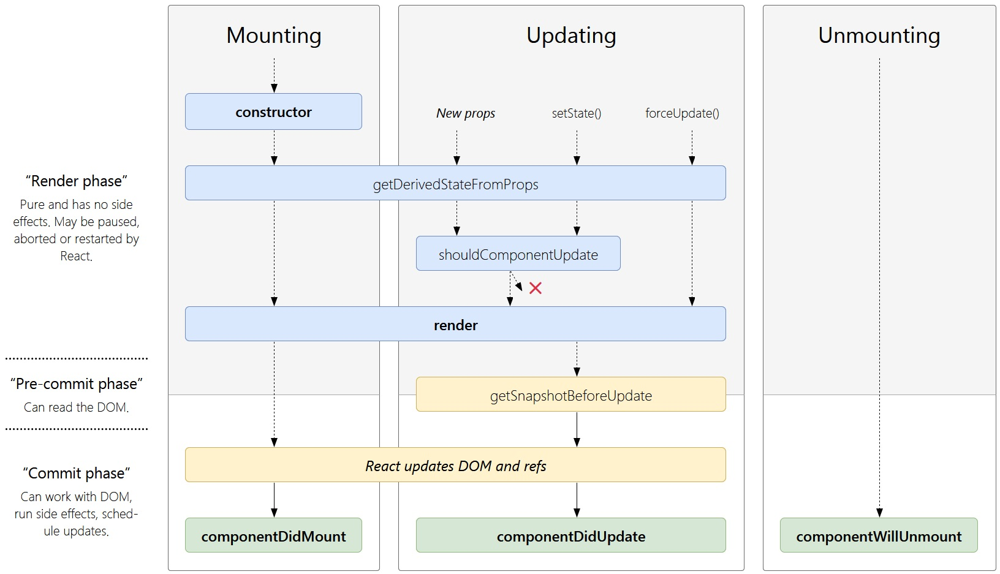

Intro
- React|ReactDOM is the entry point to the React library
- directly available if React is loaded using tag
- import React|ReactDOM from 'react|react-dom' - if you use ES6 with npm
- var React|ReactDOM = require('react|react-dom') - if you use ES5 with npm
- for older browsers support, React needs collection types Map and Set, include polyfills
- core-js or babel-polyfill
- import 'core-js/es6/map';
- import 'core-js/es6/set';
- and requestAnimationFrame, npmjs.com/package/raf: import 'raf/polyfill' | var raf = require('raf')
- React depends on modern browsers features including Promise, Symbol, and Object.assign, if you support older browsers and devices such as Internet Explorer which do not provide modern browser features natively or have non-compliant implementations, consider including a global polyfill in bundled application
- react-devtools
- recommended toolchains:
- Create React App - creates a frontend build pipeline
npx create-react-app my-appcd my-appnpm startnpm run build - create an optimized build of app in the "build" folder
- Next.js - lightweight framework for static and server-rendered applications built with React, includes styling and routing solutions
- Gatsby - to create static websites with React, lets you use React components, but outputs pre-rendered HTML and CSS to guarantee the fastest load time
- Neutrino - combines the power of webpack with the simplicity of presets, and includes a preset for React apps and React components
- nwb - for publishing React components for npm, can be used for creating React apps, too
- Parcel - fast, zero configuration web application bundler that works with React
- Razzle - server-rendering framework that doesnt require any configuration, but offers more flexibility than Next.js
- JS build toolchain typically consists of:
- package manager - Yarn or npm, take advantage of a vast ecosystem of third-party packages, and easily install or update them
- bundler - webpack or Parcel, write modular code and bundle it together into small packages to optimize load time
- compiler - Babel, write modern JavaScript code that still works in older browsers
- replace react.development.js with react.production.min.js
- CDN:
- https://unpkg.com/react@18/umd/react.production.min.js
- https://unpkg.com/react-dom@18/umd/react-dom.production.min.js
- keep crossorigin attribute: <script crossorigin src="...">
- verify that the CDN you are using sets the Access-Control-Allow-Origin: * HTTP header
<!-- Load React as script from CDN-->
<!-- NOTE: when deploying, replace "development.js" with "production.min.js" -->
<script
src="https://unpkg.com/react@18/umd/react.development.js"
crossorigin
></script>
<script
src="https://unpkg.com/react-dom@18/umd/react-dom.development.js"
crossorigin
></script>
<!-- Load React component -->
<script src="like_button.js"></script>
// import
import * as ReactDOM from 'react-dom/client';
// if you use ES5 with npm, you can write:
var ReactDOM = require('react-dom/client');
JSX
- syntactic sugar for the React.createElement(component, props, ...children)
- use JSX
- Development method:
- <script src="../js/babel.min.js" crossorigin></script>
- use JSX in any script-tag by adding type="text/babel" attribute
- Adding to project:
- go to project folder
npm init -ynpm install babel-cli@6 babel-preset-react-app@3- create "src" folder
- start an automated watcher for JSX:
npx babel --watch src --out-dir . --presets react-app/prod
- work inside "src" folder and preprocessor will re-run automatically
- React DOM uses camelCase property naming convention instead of HTML attribute names: class becomes className in JSX, and tabindex becomes tabIndex, exception is aria-* and data-* attributes, which should be lowercased
- Babel compiles JSX down to React.createElement() calls
- React DOM escapes any values embedded in JSX before rendering them
- {/* Comment goes here */} - comments in JSX
<MyButton color="blue" shadowSize={2}>
Click Me
</MyButton>
// compiles into:
React.createElement(
MyButton,
{color: 'blue', shadowSize: 2},
'Click Me'
)
class Hello extends React.Component {
render() {
return <div>Hello {this.props.toWhat}</div>;
}
}
const root = ReactDOM.createRoot(document.getElementById('root'));
root.render(<Hello toWhat="World" />);
// can be compiled to this code that does not use JSX:
class Hello extends React.Component {
render() {
return React.createElement('div', null, `Hello ${this.props.toWhat}`);
}
}
const root = ReactDOM.createRoot(document.getElementById('root'));
root.render(React.createElement(Hello, {toWhat: 'World'}, null));
// --- self-closing form of the tag if there are no children
<div className="sidebar" />
// compiles into:
React.createElement(
'div',
{className: 'sidebar'},
null
)
// --- React library must also always be in scope from JSX code
// NOT required if using via script tag
import React from 'react';
import CustomButton from './CustomButton';
function WarningButton() {
// return React.createElement(CustomButton, {color: 'red'}, null);
// --- if you use the JSX <Foo /> expression, Foo must be in scope
return <CustomButton color="red" />;
}
// --- using dot notation for jsx type
const MyComponents = {
DatePicker: function DatePicker(props) {
return <div>Imagine a {props.color} datepicker here.</div>;
}
}
function BlueDatePicker() {
return <MyComponents.DatePicker color="blue" />;
}
// --- user-defined components must be capitalized
// to not mess with standard tags
function Hello(props) {
return <div>Hello {props.toWhat}</div>;
}
function HelloWorld() {
return <Hello toWhat="World" />;
}
// --- if you do want to use a general expression to indicate the type of the element,
// just assign it to a capitalized variable first
import React from 'react';
import { PhotoStory, VideoStory } from './stories';
const components = {
photo: PhotoStory,
video: VideoStory
};
function Story(props) {
// Wrong! JSX type can't be an expression.
// return <components[props.storyType] story={props.story} />;
// Correct! JSX type can be a capitalized variable.
const SpecificStory = components[props.storyType];
return <SpecificStory story={props.story} />;
}
Props
// --- pass any JS expression as a prop, by surrounding it with {}
<MyComponent foo={1 + 2 + 3 + 4} /> // props.foo will be 10
// --- put if/for in the surrounding code
// check "conditional" and "list/key" section
function NumberDescriber(props) {
let description;
if (props.number % 2 == 0) {
description = <strong>even</strong>;
} else {
description = <i>odd</i>;
}
return <div>{props.number} is an {description} number</div>;
}
// --- string literals, following are equivalent
<MyComponent message="hello world" />
<MyComponent message={'hello world'} />
<MyComponent message="<3" />
<MyComponent message={'<3'} />
// --- props default to "true", following are equivalent
<MyTextBox autocomplete />
<MyTextBox autocomplete={true} />
// --- Spread Attributes
// use "..." as a spread operator to pass the whole props object, following are equivalent
function App1() {
return <Greeting firstName="Ben" lastName="Hector" />;
}
function App2() {
const props = {firstName: 'Ben', lastName: 'Hector'};
return <Greeting {...props} />;
}
// pick specific props that component will consume
// while passing all other props using the spread operator
const Button = props => {
const { kind, ...other } = props;
const className = kind === "primary" ? "PrimaryButton" : "SecondaryButton";
return <button className={className} {...other} />;
};
const App = () => {
return (
<div>
<Button kind="primary" onClick={() => console.log("clicked!")}>
Hello World!
</Button>
</div>
);
};
Children
// JSX expressions that contain both an opening tag and a closing tag,
// the content between those tags is passed as a special prop: props.children
// --- string literals
<MyComponent>Hello world!</MyComponent>
// props.children in MyComponent will simply be the string "Hello world!"
// HTML is unescaped, multiple spaces/tab/newline are removed
// --- more JSX elements as the children
<MyContainer>
<MyFirstComponent />
<MySecondComponent />
</MyContainer>
// mix together different types of children
<div>
Here is a list:
<ul>
<li>Item 1</li>
<li>Item 2</li>
</ul>
</div>
// return an array of elements
render() {
// No need to wrap list items in an extra element!
return [
// Don't forget the keys :)
<li key="A">First item</li>,
<li key="B">Second item</li>,
<li key="C">Third item</li>,
];
}
// --- JS expressions as children
// following are equivalent
<MyComponent>foo</MyComponent>
<MyComponent>{'foo'}</MyComponent>
// render an HTML list
function Item(props) {
return <li>{props.message}</li>;
}
function TodoList() {
const todos = ['finish doc', 'submit pr', 'nag dan to review'];
return (
<ul>
{todos.map((message) => <Item key={message} message={message} />)}
</ul>
);
}
// mixed with other types of children
function Hello(props) {
return <div>Hello {props.addressee}!</div>;
}
// --- functions as children
// take a callback as props.children
// call the children callback numTimes to produce a repeated component
function Repeat(props) {
let items = [];
for (let i = 0; i < props.numTimes; i++) {
items.push(props.children(i));
}
return <div>{items}</div>;
}
function ListOfTenThings() {
return (
<Repeat numTimes={10}>
{(index) => <div key={index}>This is item {index} in the list</div>}
</Repeat>
);
}
// --- booleans, null, and undefined are ignored
// same thing:
<div />
<div></div>
<div>{false}</div>
<div>{null}</div>
<div>{undefined}</div>
<div>{true}</div>
// can be useful to conditionally render React elements
<div>
{showHeader && <Header />}
<Content />
</div>
// "falsy" values, such as the 0 number, are still rendered by React
// make sure that the expression before && is always boolean
<div>
{props.messages.length > 0 &&
<MessageList messages={props.messages} />
}
</div>
// convert to a string if you want
//a value like false, true, null, or undefined to appear in the output
<div>
My JavaScript variable is {String(myVariable)}.
</div>
Example
<!-- put React component inside DIV -->
<!-- ONCE -->
<div id="like_button_container"></div>
<!-- MULTIPLE -->
<div class="like_button_container" data-commentid="1"></div>
<div class="like_button_container" data-commentid="2"></div>
<script type="text/babel">
'use strict';
const e = React.createElement;
class LikeButton extends React.Component {
constructor(props) {
super(props);
this.state = { liked: false };
}
render() {
if (this.state.liked) {
return 'You liked comment number ' + this.props.commentID;
}
// return e(
// 'button',
// { onClick: () => this.setState({ liked: true }) },
// 'Like'
// + ( this.props.commentID ? ' number '+ this.props.commentID : '' )
// );
// // --- JSX version
return (
<button onClick={() => this.setState({ liked: true })}>
Like
</button>
);
}
}
// Find all DOM containers, and render Like buttons into them
document.querySelectorAll('.like_button_container') // or #like_button_container
.forEach(domContainer => {
// Read the comment ID from a data-* attribute.
const commentID = parseInt(domContainer.dataset.commentid, 10);
const root = ReactDOM.createRoot(domContainer);
root.render(e(LikeButton, { commentID: commentID }));
});
</script>
Elements
- React elements are immutable, once created, you cant change its children or attributes, represents the UI at a certain point in time
// --- rendering into a root DOM node
const root = ReactDOM.createRoot(document.getElementById('root'));
root.render(<h1>Hello, world</h1>);
// --- updating
const elements_root = ReactDOM.createRoot(document.getElementById('elements_root'));
function tick() {
const element = (
<div>
<h3>It is {new Date().toLocaleTimeString()}</h3>
</div>
);
elements_root.render(element);
}
setInterval(tick, 1000);
API
// --- createElement()
React.createElement(
type, // tag name string, React component type (class|function), React fragment type
[props],
[...children]
)
// --- cloneElement()
// clone and return a new React element using element as the starting point
// resulting element will have the original element props with the new props merged in shallowly
// new children will replace existing children
// key and ref from the original element will be preserved
React.cloneElement(
element,
[props],
[...children]
)
// almost equivalent to:
// <element.type {...element.props} {...props}>{children}</element.type>
// introduced as a replacement of the deprecated React.addons.cloneWithProps()
// --- isValidElement()
// verifies the object is a React element, returns true or false
React.isValidElement(object)
// --- React.Children
// utilities for dealing with the this.props.children opaque data structure
React.Children.map(children, fn[(thisArg)]) // returns array
React.Children.forEach(children, fn[(thisArg)]) // does not return an array
// number of times that a callback passed to map or forEach would be invoked
React.Children.count(children)
// verifies that children has only one child (a React element) and returns it
// otherwise throws an error
// does not accept the return value of React.Children.map() because it is an array
React.Children.only(children)
// children opaque data structure as a flat array with keys assigned to each child
React.Children.toArray(children)
Component / Props / State
- split the UI into independent, reusable pieces, and think about each piece in isolation
- like JS functions, accept arbitrary inputs (called props) and return React elements describing what should appear on the screen
- element representing a user-defined component passes JSX attributes to this component as a single object called "props"
- all React components must act like pure functions, never modify props, treat as read-only
- convert a function to a class
- create an ES6 class, with the same name, that extends React.Component
- add a single empty method to it called render()
- move the body of the function into the render() method
- replace props with this.props in the render() body
- delete the remaining empty function declaration
- render() method is the only required method in a class component
- state is similar to props, but it is private and fully controlled by the component, often called local or encapsulated, not accessible to any component other than the one that owns and sets it, component may choose to pass its state down as props to its child components, assign this.state only in the constructor and use setState() in other cases
- move props to state
- replace this.props.* with this.state.* in the render() method
- add a class constructor that assigns the initial this.state
- remove prop from component call
- setState( stateChange [,callback] ) - merges the object you provide into the current state, primary method to update the user interface,re-render a component, in response to event handlers and server responses
- pass object as stateChange argument - shallow merge into the new state
- pass function as stateChange argument - mutate state
- request rather than an immediate command to update the component, asynchronous inside event handlers
- subsequent calls will override values from previous calls in the same cycle, so the state will only be updated once, use the updater function form
- use componentDidUpdate or a setState callback (setState(updater, callback)) to read this.state right after calling setState()
- React may batch multiple setState() calls into a single update for performance before starting to re-render
- this.props and this.state may be updated asynchronously, dont rely on their values for calculating the next state, use a second form of setState((state, props) => stateChange) that accepts a function with state and prop rather than an object
- update several independent variables independently with separate setState()
- optional callback function - executed once setState is completed and the component is re-rendered, use componentDidUpdate() for such logic instead
- since React 18 updates inside of timeouts, promises, native event handlers or any other event will batch the same way as updates inside of React events and avoid double re-rendering wrap state change into
flushSync(() => {...}) (import { flushSync } from 'react-dom') if code may depend on reading something from the DOM immediately after a state change
- forceUpdate(callback) - tell React that the component needs re-rendering
- cause render() to be called on the component, skipping shouldComponentUpdate(), trigger the normal lifecycle methods for child components, including the shouldComponentUpdate() method of each child, only update the DOM if the markup changes
- avoid all uses of forceUpdate() and only read from this.props and this.state in render()
- you are free to add additional fields to the class manually if you need to store something that does not participate in the data flow (like a timer ID)
// JS function - simplest way to define a component
function Welcome(props) {
return <h3>Hello, {props.name}</h3>;
}
const Example = (props) => {
// You can use Hooks here!
return <div />;
}
// using ES6 class, equivalent from Reacts point of view
class Welcome extends React.Component {
render() {
return <h3>Hello, {this.props.name}</h3>;
}
}
const element = <Welcome name="Andrei" />; // represent user-defined components
const comprops_root = ReactDOM.createRoot(document.getElementById('comprops_root'));
comprops_root.render(element);
// render many times
function App() {
return (
<div>
<Welcome name="Andrei" />
<Welcome name="John" />
<Welcome name="Leon" />
</div>
);
}
const comprops_root = ReactDOM.createRoot(document.getElementById('comprops_root'));
comprops_root.render(<App />);
Control props & State reducers
// Control props - allow complete control over state from outside the component
// require that the consumer completely manage state themselves
// means must have a class component with state and change handlers to update that state
class Example extends React.Component {
state = {on: false, inputValue: 'off'};
handleToggle = on => {
this.setState({on, inputValue: on ? 'on' : 'off'});
}
handleChange = ({target: {value}}) => {
if (value === 'on') {
this.setState({on: true});
} else if (value === 'off') {
this.setState({on: false});
}
this.setState({inputValue: value});
}
render() {
const {on} = this.state;
return (
<div>
{/* using the "value" control prop exposed by the input */}
<input value={this.state.inputValue} onChange={this.handleChange} />
{/* using the "on" control prop exposed by the Toggle component */}
<Toggle on={on} onToggle={this.handleToggle} />
</div>
);
}
}
// State reducers - do not have to manage the component state themselves
// they can manage some of their own state as needed
class Example extends React.Component {
initialState = {timesClicked: 0};
state = this.initialState;
handleToggle = (...args) => {
this.setState(({timesClicked}) => ({
timesClicked: timesClicked + 1,
}));
}
handleReset = (...args) => {
this.setState(this.initialState);
}
toggleStateReducer = (state, changes) => {
if (this.state.timesClicked >= 4) {
return {...changes, on: false};
}
return changes;
}
render() {
const {timesClicked} = this.state;
return (
<div>
<Toggle
stateReducer={this.toggleStateReducer}
onToggle={this.handleToggle}
onReset={this.handleReset}
/>
{timesClicked > 4 ? (
<div>Whoa, you clicked too much!</div>
) : (
<div>Click count: {timesClicked}</div>
)}
</div>
)
}
}
De/Compose Component
function Avatar(props) {
return (
<img className="Avatar"
src={props.user.avatarUrl}
alt={props.user.name}
/>
);
}
function UserInfo(props) {
return (
<div className="UserInfo">
<Avatar user={props.user} />
<div className="UserInfo-name">
{props.user.name}
</div>
</div>
);
}
function Comment(props) {
return (
<div className="Comment">
<UserInfo user={props.author} />
<div className="Comment-text">
{props.text}
</div>
<div className="Comment-date">
{formatDate(props.date)}
</div>
</div>
);
}
const comment = {
date: new Date(),
text: 'Lets React!',
author: {
name: 'Hello Andrei',
avatarUrl: '../images/colorpicker.gif',
},
};
const comprops_2_root = ReactDOM.createRoot(document.getElementById('comprops_2_root'));
comprops_2_root.render(
<Comment
date={comment.date}
text={comment.text}
author={comment.author}
/>
);
// --- instead of
function Comment(props) {
return (
<div className="Comment">
<div className="UserInfo">
<img className="Avatar"
src={props.author.avatarUrl}`
alt={props.author.name}
/>
<div className="UserInfo-name">
{props.author.name}
</div>
</div>
<div className="Comment-text">
{props.text}
</div>
<div className="Comment-date">
{formatDate(props.date)}
</div>
</div>
);
}
function formatDate(date) {
return date.toLocaleDateString();
}
Function to Class , Props to State
function Clock(props) {
return (
<div>
<h2>It is {props.date.toLocaleTimeString()}.</h2>
</div>
);
}
class Clock extends React.Component {
render() {
return (
<div>
<h2>It is {this.props.date.toLocaleTimeString()}.</h2>
</div>
);
}
}
class Clock extends React.Component {
constructor(props) {
super(props);
this.state = {date: new Date()};
}
render() {
return (
<div>
<h2>It is {this.state.date.toLocaleTimeString()}.</h2>
</div>
);
}
}
const root = ReactDOM.createRoot(document.getElementById('root'));
root.render(<Clock />);
// --- pass local state down as props
<h2>It is {this.state.date.toLocaleTimeString()}</h2>
...
<FormattedDate date={this.state.date} />
setState(updater [,callback])
class Clock extends React.Component {
constructor(props) {
super(props);
this.state = {date: new Date(), counter: 0};
}
componentDidMount() {
this.timerID = setInterval(
() => this.tick(),
1000
);
}
componentWillUnmount() {
clearInterval(this.timerID);
}
tick() {
// --- simple setState
// this.setState({
// date: new Date()
// });
// --- second form, to use state and props together
this.setState(
// previous state (first argument)
// props at the time the update is applied (second argument)
(state, props) => ({
// function(state, props) {
date: new Date(),
// counter: state.counter + 1
counter: state.counter + props.increment
// }
}));
}
render() {
return (
<div>
<h3>It is {this.state.date.toLocaleTimeString()}</h3>
<h3>Counter is {this.state.counter}</h3>
</div>
);
}
}
const comprops_3_root = ReactDOM.createRoot(document.getElementById('comprops_3_root'));
comprops_3_root.render(<Clock increment={7}/>);
// --- update with separate setState() calls
// ...
constructor(props) {
super(props);
this.state = {
posts: [],
comments: []
};
}
componentDidMount() {
fetchPosts().then(response => {
this.setState({
posts: response.posts
});
});
fetchComments().then(response => {
this.setState({
comments: response.comments
});
});
}
// ...
API
// --- React.Component
class Greeting extends React.Component {
render() {
return <h1>Hello, {this.props.name}</h1>;
}
}
// --- React.PureComponent
// implements shouldComponentUpdate() which shallowly compares the objects
// and skips prop updates for the whole component subtree,
// make sure all the children components are also "pure".
// only extend PureComponent when you expect to have simple props and state,
// or use forceUpdate() when you know deep data structures have changed
// or consider using immutable objects to facilitate fast comparisons of nested data
// --- React.memo - HOC, similar to React.PureComponent
// but for function components instead of classes
// which renders the same result given the same props
// only shallowly compare complex objects in the props object
const MyComponent = React.memo(function MyComponent(props) {
/* render using props */
});
// provide a custom comparison function as the second argument
function MyComponent(props) {
/* render using props */
}
function areEqual(prevProps, nextProps) {
/*
return true if passing nextProps to render would return
the same result as passing prevProps to render,
otherwise return false
*/
}
export default React.memo(MyComponent, areEqual);
Lifecycle
- lifecycle methods - mount or unmount of a component and its specific scenarios such as first rendering and timers, override to run code at particular times in the process
- mounting - instance of a component is being created and inserted into the DOM
- constructor()
- static getDerivedStateFromProps()
- render()
- componentDidMount()
- updating - caused by changes to props or state, component is being re-rendered
- static getDerivedStateFromProps()
- shouldComponentUpdate()
- render()
- getSnapshotBeforeUpdate()
- componentDidUpdate()
- unmounting - component is being removed from the DOM
- error handling - there is an error during rendering
- static getDerivedStateFromError(error) - invoked after an error has been thrown by a descendant component, receives the error that was thrown as a parameter and should return a value to update state, handle fallback rendering, called during the "render" phase, so side-effects are not permitted (use componentDidCatch() instead)
- componentDidCatch(error, info) - invoked after an error has been thrown by a descendant component, called during the "commit" phase, so side-effects are permitted, should be used for things like logging errors
- componentWillMount, componentWillReceiveProps, componentWillUpdate - are considered unsafe, used with UNSAFE_* prefix

- constructor(props) - called before component is mounted, typicall only used for two purposes: initializing local state by assigning an object to this.state and binding event handler methods to an instance
- if you dont initialize state and you dont bind methods, you dont need to implement a constructor for React component
- dont call setState() in the constructor(), if component needs to use local state, assign the initial state to this.state directly in the constructor, and use setState() in all other methods
- when implementing the constructor for a React.Component subclass, you should call super(props) before any other statement, otherwise, this.props will be undefined in the constructor, which can lead to bugs
- dont copy here props into state
constructor(props) {
super(props);
this.handleClick = this.handleClick.bind(this);
// dont call this.setState() here ! assign the initial state
this.state = { counter: 0 };
// dont do this !!!
this.state = { color: props.color };
}
- static getDerivedStateFromProps(props, state) - invoked before calling the render method, both on the initial mount and on subsequent updates, should return an object to update the state, or null to update nothing
- for rare use cases, where the state depends on changes in props over time
- leads to verbose code and makes components difficult to think about
- shouldComponentUpdate(nextProps, nextState) - let React know if a component output is not affected by the current change in state or props, invoked before rendering when new props or state are being received, default behavior is to re-render on every state change
- compare this.props with nextProps and this.state with nextState and return false to tell React the update can be skipped
- rely on the default behavior in majority of cases
- consider using the built-in PureComponent instead of writing shouldComponentUpdate() by hand
- returning false does not prevent child components from re-rendering when their state changes
- if returns false, then render() and componentDidUpdate() will not be invoked, in the future React may treat shouldComponentUpdate() as a hint rather than a strict directive, and returning false may still result in a re-rendering of the component
- render() - should be pure (does not modify component state, returns the same result each time its invoked, and it does not directly interact with the browser), will not be invoked if shouldComponentUpdate() returns false, should examine this.props and this.state and return one of the following types:
- React elements
- arrays and fragments
- portals
- string and numbers - rendered as text nodes in the DOM
- booleans or null - render nothing, mostly exists to support return test && <Child /> pattern, where test is boolean
- getSnapshotBeforeUpdate(prevProps, prevState) - invoked before the most recently rendered output is committed (to e.g. the DOM), snapshot value (or null) should be returned
- any value returned by this lifecycle will be passed as a parameter to componentDidUpdate()
- enables component to capture some information from the DOM (e.g. scroll position) before it is potentially changed
- use case is not common, but it may occur in UIs like a chat thread that need to handle scroll position in a special way
class ScrollingList extends React.Component {
constructor(props) {
super(props);
this.listRef = React.createRef();
}
getSnapshotBeforeUpdate(prevProps, prevState) {
// are we adding new items to the list?
// capture the scroll position so we can adjust scroll later
if (prevProps.list.length < this.props.list.length) {
const list = this.listRef.current;
return list.scrollHeight - list.scrollTop;
}
return null;
}
componentDidUpdate(prevProps, prevState, snapshot) {
// if we have a snapshot value, we just added new items
// adjust scroll so these new items dont push the old ones out of view
// (snapshot here is the value returned from getSnapshotBeforeUpdate)
if (snapshot !== null) {
const list = this.listRef.current;
list.scrollTop = list.scrollHeight - snapshot;
}
}
render() {
return (
<div ref={this.listRef}>{ /* ...contents... */ }</div>
);
}
}
- componentDidMount() - invoked immediately after a component is mounted (inserted into the tree)
- initialization that requires DOM nodes should go here
- instantiate here the network request if you need to load data from a remote endpoint
- set up any subscriptions and dont forget to unsubscribe in componentWillUnmount()
- call setState() immediately in componentDidMount(), it will trigger an extra rendering, but it will happen before the browser updates the screen, use this pattern with caution because it often causes performance issues, in most cases, can be necessary for cases like modals and tooltips when you need to measure a DOM node before rendering something that depends on its size or position, you should be able to assign the initial state in the constructor() instead
- componentDidUpdate(prevProps, prevState, snapshot) - invoked immediately after updating occurs, not called for the initial render
- operate on the DOM when the component has been updated
- place to do network requests as long as you compare the current props to previous props (e.g. a network request may not be necessary if the props have not changed)
- call setState() immediately in componentDidUpdate(), must be wrapped in a condition to avoid infinite loop
- "snapshot" parameter is undefined or a snapshot if component implements the getSnapshotBeforeUpdate() lifecycle (which is rare)
- componentDidUpdate() will not be invoked if shouldComponentUpdate() returns false
- forgetting to handle componentDidUpdate properly is a common source of bugs in React applications
componentDidUpdate(prevProps) {
// typical usage (dont forget to compare props):
if (this.props.userID !== prevProps.userID) {
this.fetchData(this.props.userID);
}
}
- componentWillUnmount() - invoked immediately before a component is unmounted and destroyed
- perform any necessary cleanup in this method: invalidating timers, canceling network requests, or cleaning up any subscriptions that were created in componentDidMount()
- dont call setState() here because the component will never be re-rendered, once a component instance is unmounted, it will never be mounted again
- componentDidCatch(error, info) - invoked after an error has been thrown by a descendant component
class ErrorBoundary extends React.Component {
constructor(props) {
super(props);
this.state = { hasError: false };
}
static getDerivedStateFromError(error) {
// update state so the next render will show the fallback UI
return { hasError: true };
}
componentDidCatch(error, info) {
// Example "componentStack":
// in ComponentThatThrows (created by App)
// in ErrorBoundary (created by App)
// in div (created by App)
// in App
logComponentStackToMyService(info.componentStack);
}
render() {
if (this.state.hasError) {
// you can render any custom fallback UI
return <h1>Something went wrong.</h1>;
}
return this.props.children;
}
}
Events , this
- React events are named using camelCase, rather than lowercase - onClick
- with JSX you pass a function as the event handler, rather than a string
- you cannot return false to prevent default behavior, call preventDefault explicitly
- dont call addEventListener to add listeners to a DOM element after it is created, just provide a listener when the element is initially rendered
- with ES6 class a common pattern is for an event handler to be a method on the class
- pass the function itself, as a reference, dont add parenthesis (when without arguments) : ...onClick={this.handleClick}..., avoid following, created a new function each render
- onClick={this.handleClick.bind(this)}
- onClick={() => this.handleClick()
- pass an extra parameter to an event handler (in a loop etc.):
- onClick={(e) => this.deleteRow(id, e)}
- onClick={this.deleteRow.bind(this, id)} same as onClick={() => this.handleClick(id)}
- in both cases, the "e" argument representing the React event will be passed as a second argument after the ID, with an arrow function, we have to pass it explicitly, but with "bind", any further arguments are automatically forwarded
- event handlers will be passed instances of SyntheticEvent, a cross-browser wrapper around the browser native event, it has the same interface as the browser native event, including stopPropagation() and preventDefault()
- use the nativeEvent attribute to get underlying browser event
- event cannot be accessed in an asynchronous way, just its attributes: event.type,...
- event handlers are triggered by an event in the bubbling phase, to register an event handler for the capture phase, append Capture to the event name; for example, instead of using onClick, you would use onClickCapture to handle the click event in the capture phase
- prevent a function from being called too quickly or too many times in a row
- throttling - sample changes based on a time based frequency (eg _.throttle)
- debouncing - publish changes after a period of inactivity (eg _.debounce)
- requestAnimationFrame throttling - sample changes based on requestAnimationFrame (eg raf-schd)
- see HTML-DOM-JS/Debounce
function ActionLink() {
function handleClick(e) {
e.preventDefault();
console.log('The link was clicked.');
}
return ( <a href="#" onClick={handleClick}>Click me</a> );
}
class Toggle extends React.Component {
constructor(props) {
super(props);
this.state = {isToggleOn: true};
// necessary, to make "this" work in the callback
this.handleClick = this.handleClick.bind(this);
}
handleClick() {
this.setState(state => ({ isToggleOn: !state.isToggleOn }));
}
// experimental syntax
// bound "this" within handleClick without help of construtor
// enabled by default in Create React App
handleClick = () => { console.log('this is:', this); }
render() {
return (
<button onClick={this.handleClick}>
{this.state.isToggleOn ? 'ON' : 'OFF'}
</button>
);
}
}
const e_root = ReactDOM.createRoot(document.getElementById('e_root'));
e_root.render(<Toggle />);
// --- passing params
const A = 65; // ASCII character code
class Alphabet extends React.Component {
constructor(props) {
super(props);
this.handleClick = this.handleClick.bind(this);
this.state = {
justClicked: null,
letters: Array.from(
{length: 26},
(_, i) => String.fromCharCode(A + i)
)
};
}
handleClick(letter) { this.setState({ justClicked: letter }); }
// or with data-.
handleClick(e) {
this.setState({ justClicked: e.target.dataset.letter });
}
render() {
return (
<div>
Click on letter in list, last clicked: {this.state.justClicked}
<br />
<ul>
{this.state.letters.map(letter =>
<li key={letter}
onClick={() => this.handleClick(letter)}
/* OR with data-. */
data-letter={letter} onClick={this.handleClick}
>
{letter}
</li>
)}
</ul>
</div>
)
}
}
SyntheticEvent properties
bubbles
cancelable
currentTarget
defaultPrevented
eventPhase
isTrusted
DOMEvent nativeEvent
preventDefault()
isDefaultPrevented()
stopPropagation()
isPropagationStopped()
target
timeStamp
type
// --- CLIPBOARD
onCopy onCut onPaste
DOMDataTransfer clipboardData
// --- COMPOSITION
onCompositionEnd onCompositionStart onCompositionUpdate
data
// --- KEYBOARD
onKeyDown onKeyPress onKeyUp
// properties
altKey ctrlKey shiftKey metaKey
charCode
getModifierState(key)
key
keyCode
locale
location
repeat
which
// --- FOCUS
onFocus onBlur
relatedTarget
// --- FORM
onChange onInput onInvalid onSubmit
// --- MOUSE
onClick onContextMenu onDoubleClick
onDrag onDragEnd onDragEnter onDragExit
onDragLeave onDragOver onDragStart onDrop
onMouseDown onMouseEnter onMouseLeave
onMouseMove onMouseOut onMouseOver onMouseUp
// properties
altKey ctrlKey shiftKey metaKey
button
buttons
clientX clientY
getModifierState(key)
pageX pageY
relatedTarget
screenX screenY
// --- POINTER
onPointerDown onPointerMove onPointerUp onPointerCancel
onGotPointerCapture onLostPointerCapture onPointerEnter
onPointerLeave onPointerOver onPointerOut
// properties
pointerId
width height
pressure
tangentialPressure
tiltX tiltY twist
pointerType
isPrimary
// --- SELECTION
onSelect
// --- TOUCH
onTouchCancel onTouchEnd onTouchMove onTouchStart
// properties
altKey ctrlKey shiftKey metaKey
changedTouches
getModifierState(key)
targetTouches
touches
// --- UI
onScroll
// properties
detail
view
// --- WHEEL
onWheel
// properties
deltaMode
deltaX deltaY deltaZ
// --- MEDIA
onAbort onCanPlay onCanPlayThrough onDurationChange
onEmptied onEncrypted onEnded onError onLoadedData
onLoadedMetadata onLoadStart onPause onPlay onPlaying
onProgress onRateChange onSeeked onSeeking onStalled
onSuspend onTimeUpdate onVolumeChange onWaiting
// --- IMAGE
onLoad onError
// --- ANIMATION
onAnimationStart onAnimationEnd onAnimationIteration
// properties
animationName
pseudoElement
elapsedTime
// --- TRANSITION
onTransitionEnd
// properties
propertyName
pseudoElement
elapsedTime
// --- OTHER, DETAILS ELEMENT
onToggle
prevent frequent function calls
// --- throttle
import throttle from 'lodash.throttle';
class LoadMoreButton extends React.Component {
constructor(props) {
super(props);
this.handleClick = this.handleClick.bind(this);
this.handleClickThrottled = throttle(this.handleClick, 1000);
}
componentWillUnmount() {
this.handleClickThrottled.cancel();
}
render() {
return <button onClick={this.handleClickThrottled}>Load More</button>;
}
handleClick() {
this.props.loadMore();
}
}
// --- debounce
import debounce from 'lodash.debounce';
class Searchbox extends React.Component {
constructor(props) {
super(props);
this.handleChange = this.handleChange.bind(this);
this.emitChangeDebounced = debounce(this.emitChange, 250);
}
componentWillUnmount() {
this.emitChangeDebounced.cancel();
}
render() {
return (
<input
type="text"
onChange={this.handleChange}
placeholder="Search..."
defaultValue={this.props.value}
/>
);
}
handleChange(e) {
// React pools events, so we read the value before debounce.
// Alternately we could call `event.persist()` and pass the entire event.
// For more info see reactjs.org/docs/events.html#event-pooling
this.emitChangeDebounced(e.target.value);
}
emitChange(value) {
this.props.onChange(value);
}
}
// --- requestAnimationFrame
import rafSchedule from 'raf-schd';
class ScrollListener extends React.Component {
constructor(props) {
super(props);
this.handleScroll = this.handleScroll.bind(this);
// Create a new function to schedule updates.
this.scheduleUpdate = rafSchedule(
point => this.props.onScroll(point)
);
}
handleScroll(e) {
// When we receive a scroll event, schedule an update.
// If we receive many updates within a frame, we'll only publish the latest value.
this.scheduleUpdate({ x: e.clientX, y: e.clientY });
}
componentWillUnmount() {
// Cancel any pending updates since we're unmounting.
this.scheduleUpdate.cancel();
}
render() {
return (
<div
style={{ overflow: 'scroll' }}
onScroll={this.handleScroll}
>
<img src="/my-huge-image.jpg" />
</div>
);
}
}
Conditional Rendering
- create distinct components that encapsulate behavior you need, then render only some of them, depending on the state of application
- works the same way conditions work in JS, use operators like "if" or the conditional (ternary) operator to create elements representing the current state, and let React update the UI to match them
- use variables to store elements, helps you conditionally render a part of the component while the rest of the output doesnt change
- embed any expressions in JSX by wrapping them in curly braces, this includes the JS logical "&&" operator, can be handy for conditionally including an element, "true && expression" always evaluates to expression, and "false && expression" always evaluates to false
- whenever conditions become too complex, it might be a good time to extract a component
- return "null" instead of its render output to hide component even though it was rendered by another component, doing so does not affect the firing of the components lifecycle methods, for instance componentDidUpdate will still be called
function UserGreeting(props) { return <h1>Welcome back!</h1>; }
function GuestGreeting(props) { return <h1>Please sign up.</h1>; }
function Greeting(props) {
const isLoggedIn = props.isLoggedIn;
if (isLoggedIn) { return <UserGreeting />; }
return <GuestGreeting />;
}
function LoginButton(props) {
return (
<button onClick={props.onClick}>
Login
</button>
);
}
function LogoutButton(props) {
return (
<button onClick={props.onClick}>
Logout
</button>
);
}
class LoginControl extends React.Component {
constructor(props) {
super(props);
this.handleLoginClick = this.handleLoginClick.bind(this);
this.handleLogoutClick = this.handleLogoutClick.bind(this);
this.state = {isLoggedIn: false};
}
handleLoginClick() { this.setState({isLoggedIn: true}); }
handleLogoutClick() { this.setState({isLoggedIn: false}); }
render() {
const isLoggedIn = this.state.isLoggedIn;
let button;
if (isLoggedIn) {
button = <LogoutButton onClick={this.handleLogoutClick} />;
} else {
button = <LoginButton onClick={this.handleLoginClick} />;
}
return (
<div>
<Greeting isLoggedIn={isLoggedIn} />
{button}
</div>
);
}
}
const cond_1 = ReactDOM.createRoot(document.getElementById('cond_1'));
cond_1.render(<LoginControl />);
inline "IF" with logical "&&" and ternary operators
function Mailbox(props) {
const unreadMessages = props.unreadMessages;
return (
<div>
{unreadMessages.length > 0 &&
<h2>
You have {unreadMessages.length} unread messages.
</h2>
}
</div>
);
}
const messages = ['React', 'Re: React', 'Re:Re: React'];
const cond_2 = ReactDOM.createRoot(document.getElementById('cond_2'));
cond_2.render(<Mailbox unreadMessages={messages} />);
// ...
render() {
const isLoggedIn = this.state.isLoggedIn;
return (
<div>
The user is <b>{isLoggedIn ? 'currently' : 'not'}</b> logged in.
</div>
);
}
// ...
render() {
const isLoggedIn = this.state.isLoggedIn;
return (
<div>
{isLoggedIn ? (
<LogoutButton onClick={this.handleLogoutClick} />
) : (
<LoginButton onClick={this.handleLoginClick} />
)}
</div>
);
}
// ...
preventing component from rendering (return "null")
function WarningBanner(props) {
if (!props.warn) { return null; }
return (
<div className="warning">
Warning!
</div>
);
}
class Page extends React.Component {
constructor(props) {
super(props);
this.state = {showWarning: true};
this.handleToggleClick = this.handleToggleClick.bind(this);
}
handleToggleClick() {
this.setState(state => ({
showWarning: !state.showWarning
}));
}
render() {
return (
<div>
<button onClick={this.handleToggleClick}>
{this.state.showWarning ? 'Hide' : 'Show'}
</button>
<WarningBanner warn={this.state.showWarning} />
</div>
);
}
}
const cond_3 = ReactDOM.createRoot(document.getElementById('cond_3'));
cond_3.render(<Page />);
Lists/Keys
- in React, transforming arrays into lists of elements is nearly identical to using map function
- “key” is a special string attribute you need to include when creating lists of elements, help identify which items have changed/added/removed, should be given to the elements inside the array to give the elements a stable identity, use id or other unique string
- if you choose not to assign an explicit key to list items then React will default to using indexes as keys, dont use indexes for keys if the order of items may change
- specify key in list components not in items when iterating, and dont send it to item, elements inside the map() call need keys
- keys must only be unique among siblings, however they dont need to be globally unique, we can use the same keys when we produce two different arrays
- if you need the same as key value in component, pass it explicitly as a prop with a different name
const numbers = [1, 2, 3, 4, 5];
const listItems = numbers.map((number) =>
<li>{number}</li>
);
const lk_root = ReactDOM.createRoot(document.getElementById('lk_root'));
lk_root.render(<ul>{listItems}</ul>);
// --- OR
function NumberList(props) {
const numbers = props.numbers;
const listItems = numbers.map((number) =>
<li key={number.toString()}>
{number}
</li>
);
return (
<ul>{listItems}</ul>
);
// --- OR
return (
<ul>
{numbers.map((number) =>
<ListItem key={number.toString()}
value={number} />
)}
</ul>
);
}
const lk_root = ReactDOM.createRoot(document.getElementById('lk_root'));
lk_root.render(<NumberList numbers={numbers} />);
// ...
const todoItems = todos.map((todo) =>
<li key={todo.id}>
{todo.text}
</li>
);
// ...
// only do this if items have no stable IDs !!!
const todoItems = todos.map((todo, index) =>
<li key={index}>
{todo.text}
</li>
);
// ...
// --- keys must only be unique among siblings
function Blog(props) {
const sidebar = (
<ul>
{props.posts.map((post) =>
<li key={post.id}>
{post.title}
</li>
)}
</ul>
);
const content = props.posts.map((post) =>
<div key={post.id}>
<h3>{post.title}</h3>
<p>{post.content}</p>
</div>
);
return (
<div>
{sidebar}
<hr />
{content}
</div>
);
}
const posts = [
{id: 1, title: 'Hello World', content: 'Welcome to learning React!'},
{id: 2, title: 'Installation', content: 'You can install React from npm.'}
];
const lk_root = ReactDOM.createRoot(document.getElementById('lk_root'));
lk_root.render(<Blog posts={posts} />);
// ...
// can read props.id, but not props.key
const content = posts.map((post) =>
<Post
key={post.id}
id={post.id}
title={post.title} />
);
// ...
Example
const ToDo = props => (
<tr>
<td>
<label>{props.id}</label>
</td>
<td>
<input />
</td>
<td>
<label>{props.createdAt.toTimeString()}</label>
</td>
</tr>
);
class ToDoList extends React.Component {
constructor() {
super();
const date = new Date();
const toDoCounter = 1;
this.state = {
list: [
{
id: toDoCounter,
createdAt: date,
},
],
toDoCounter: toDoCounter,
};
}
sortByEarliest() {
const sortedList = this.state.list.sort((a, b) => {
return a.createdAt - b.createdAt;
});
this.setState({
list: [...sortedList],
});
}
sortByLatest() {
const sortedList = this.state.list.sort((a, b) => {
return b.createdAt - a.createdAt;
});
this.setState({
list: [...sortedList],
});
}
addToEnd() {
const date = new Date();
const nextId = this.state.toDoCounter + 1;
const newList = [
...this.state.list,
{id: nextId, createdAt: date},
];
this.setState({
list: newList,
toDoCounter: nextId,
});
}
addToStart() {
const date = new Date();
const nextId = this.state.toDoCounter + 1;
const newList = [
{id: nextId, createdAt: date},
...this.state.list,
];
this.setState({
list: newList,
toDoCounter: nextId,
});
}
render() {
return (
<div>
<code>key=id</code>
<br />
<button onClick={this.addToStart.bind(this)}>
Add New to Start
</button>
<button onClick={this.addToEnd.bind(this)}>
Add New to End
</button>
<button onClick={this.sortByEarliest.bind(this)}>
Sort by Earliest
</button>
<button onClick={this.sortByLatest.bind(this)}>
Sort by Latest
</button>
<table>
<tr>
<th>ID</th>
<th />
<th>created at</th>
</tr>
{this.state.list.map((todo, index) => (
<ToDo key={todo.id} {...todo} />
))}
</table>
</div>
);
}
}
const list_example_root = ReactDOM.createRoot(document.getElementById('list_example_root'));
list_example_root.render(<ToDoList />);
Pagination
class TodoApp extends React.Component {
constructor() {
super();
this.state = {
todos: ['a','b','c','d','e','f','g','h','i','j','k'],
currentPage: 1,
todosPerPage: 3
};
this.handleClick = this.handleClick.bind(this);
}
handleClick(event) {
this.setState({
currentPage: Number(event.target.id)
});
}
render() {
const { todos, currentPage, todosPerPage } = this.state;
// Logic for displaying todos
const indexOfLastTodo = currentPage * todosPerPage;
const indexOfFirstTodo = indexOfLastTodo - todosPerPage;
const currentTodos = todos.slice(indexOfFirstTodo, indexOfLastTodo);
const renderTodos = currentTodos.map((todo, index) => {
return <li key={index}>{todo}</li>;
});
// Logic for displaying page numbers
const pageNumbers = [];
for (let i = 1; i <= Math.ceil(todos.length / todosPerPage); i++) {
pageNumbers.push(i);
}
const renderPageNumbers = pageNumbers.map(number => {
return (
<span
key={number}
id={number}
onClick={this.handleClick}
>
({number})
</span>
);
});
return (
<div>
<div>Click on numbers</div>
<div>{renderPageNumbers}</div>
<ul>
{renderTodos}
</ul>
</div>
);
}
}
const list_pagination_root = ReactDOM.createRoot(document.getElementById('list_pagination_root'));
list_pagination_root.render(<TodoApp />);
- controlled component - input form element whose value is controlled by React
- <input type="text">, <textarea>, and <select> all work very similarly - they all accept a value attribute
- use Formik for a complete solution including validation, keeping track of the visited fields, and handling form submission
- uncontrolled components - where form data is handled by the DOM itself, instead of writing an event handler for every state update, you can use a "ref" to get form values from the DOM
- specify a "defaultValue" attribute instead of "value" with an uncontrolled component, to specify the initial value, but leave subsequent updates uncontrolled
- "checkbox" and "radio" supports "defaultChecked"
- "select" and "textarea" supports "defaultValue
- <input type="file" /> is always an uncontrolled component because its value can only be set by a user, and not programmatically, use the File API to interact with the files
- attributes
- checked - supported by input components of type checkbox or radio, use it to set whether the component is checked, useful for building controlled components, defaultChecked is the uncontrolled equivalent, which sets whether the component is checked when it is first mounted
- selected - supported by option components, use it to set whether the component is selected, useful for building controlled components
- value - supported by input and textarea components, use it to set the value of the component, useful for building controlled components, defaultValue is the uncontrolled equivalent, which sets the value of the component when it is first mounted
- dangerouslySetInnerHTML - React replacement for using innerHTML
- suppressContentEditableWarning - remove warning when an element with children is also marked as contentEditable
class NameForm extends React.Component {
constructor(props) {
super(props);
this.state = {
working: false,
gender: 'male',
input_text: 'Andrei',
input_textarea: 'Some text here ...',
select_age: 35,
select_hobby: ['sport','tech'] // create selection scenario...
};
this.handleChange = this.handleChange.bind(this);
this.handleSubmit = this.handleSubmit.bind(this);
}
handleChange(event) {
// this.setState({value: event.target.value.toUpperCase()});
// or, for multiple inputs:
const target = event.target;
const value = (target.type === 'checkbox') ? target.checked : target.value;
const name = target.name;
this.setState({
[name]: value
});
// equivalent to this ES5 code:
// var partialState = {};
// partialState[name] = value;
// this.setState(partialState);
}
handleSubmit(event) {
event.preventDefault();
const output =
"working: " + this.state.working.toString() + "\n" +
"gender: " + this.state.gender.toString() + "\n" +
"input_text: " + this.state.input_text.toString() + "\n" +
"input_textarea: " + this.state.input_textarea.toString() + "\n" +
"select_hobby: " + this.state.select_hobby.toString() + "\n" +
"select_age: " + this.state.select_age.toString();
alert('Values:\n' + output);
}
render() {
return (
<form onSubmit={this.handleSubmit}>
Working:
<input
name="working"
type="checkbox"
checked={this.state.working}
onChange={this.handleChange}
/>
Gender:
<input
type="radio"
name="gender"
value="male"
checked={this.state.gender === "male"}
onChange={this.handleChange}
id="forms_root_male"
/>
<label htmlFor="forms_root_male">Male</label>
<input
type="radio"
name="gender"
value="female"
checked={this.state.gender === "female"}
onChange={this.handleChange}
id="forms_root_female"
/>
<label htmlFor="forms_root_female">Female</label>
Name:
<input
type="text"
name="input_text"
value={this.state.input_text}
onChange={this.handleChange}
/>
Info:
<textarea
name="input_textarea"
value={this.state.input_textarea}
onChange={this.handleChange}
/>
Hobby:
<select
multiple={true}
name="select_hobby"
value={this.state.select_hobby}
onChange={this.handleChange}
>
<option value="sport">Sport</option>
<option value="tech">Tech</option>
<option value="books">Books</option>
<option value="travel">Travel</option>
</select>
Age Range:
<select
name="select_age"
value={this.state.select_age}
onChange={this.handleChange}
>
<option value="18">up to 18</option>
<option value="25">19-25</option>
<option value="35">26-35</option>
<option value="100">36-...</option>
</select>
<input type="submit" value="Submit" />
</form>
);
}
}
const forms_root = ReactDOM.createRoot(document.getElementById('forms_root'));
forms_root.render(<NameForm />);
// --- dangerouslySetInnerHTML
function createMarkup() {
return {__html: 'First · Second'};
}
function MyComponent() {
return <div dangerouslySetInnerHTML={createMarkup()} />;
}
uncontrolled component form
class UncontrolledComponentForm extends React.Component {
constructor(props) {
super(props);
this.handleSubmit = this.handleSubmit.bind(this);
this.inputName = React.createRef();
this.inputHobby = React.createRef();
this.inputFile = React.createRef();
}
handleSubmit(event) {
event.preventDefault();
const inputFile = (
this.inputFile.current.files[0] ?
this.inputFile.current.files[0].name : "[ No File ]"
);
alert(
'submitted: '
+ this.inputName.current.value + ', '
+ this.inputHobby.current.value + ', '
+ inputFile
);
}
render() {
return (
<form onSubmit={this.handleSubmit}>
<label>
Name:
<input type="text" ref={this.inputName} />
</label><br/>
<label>
Hobby:
<input
defaultValue="Sport"
type="text"
ref={this.inputHobby} />
</label><br/>
<label>
Avatar:
<input type="file" ref={this.inputFile} />
</label><br/>
<input type="submit" value="Submit" />
</form>
);
}
}
const uc_root = ReactDOM.createRoot(document.getElementById('uc_root'));
uc_root.render(<UncontrolledComponentForm />);
Lifting State
- reflect the same changing data in several components, lift the shared state up to their closest common ancestor
const scaleNames = {
c: 'Celsius',
f: 'Fahrenheit'
};
function toCelsius(fahrenheit) {
return (fahrenheit - 32) * 5 / 9;
}
function toFahrenheit(celsius) {
return (celsius * 9 / 5) + 32;
}
function tryConvert(temperature, convert) {
const input = parseFloat(temperature);
if (Number.isNaN(input)) {
return '';
}
const output = convert(input);
const rounded = Math.round(output * 1000) / 1000;
return rounded.toString();
}
function BoilingVerdict(props) {
if (props.celsius >= 100) {
return <p>The water would boil</p>;
}
return <p>The water would not boil</p>;
}
class TemperatureInput extends React.Component {
constructor(props) {
super(props);
this.handleChange = this.handleChange.bind(this);
}
handleChange(e) {
// send local value to Calculator handler
this.props.onTemperatureChange(e.target.value);
}
render() {
const temperature = this.props.temperature;
const scale = this.props.scale;
return (
<fieldset>
<legend>Enter temperature in {scaleNames[scale]}:</legend>
<input
value={temperature}
onChange={this.handleChange} />
</fieldset>
);
}
}
class Calculator extends React.Component {
constructor(props) {
super(props);
this.handleCelsiusChange = this.handleCelsiusChange.bind(this);
this.handleFahrenheitChange = this.handleFahrenheitChange.bind(this);
// single “source of truth” for any data that changes
this.state = {
temperature: '',
scale: 'c'
};
}
// will re-render both TemperatureInput when calling their handlers
handleCelsiusChange(temperature) {
this.setState({scale: 'c', temperature});
}
handleFahrenheitChange(temperature) {
this.setState({scale: 'f', temperature});
}
render() {
const scale = this.state.scale;
const temperature = this.state.temperature;
const celsius =
scale === 'f' ?
tryConvert(temperature, toCelsius) : temperature;
const fahrenheit =
scale === 'c' ?
tryConvert(temperature, toFahrenheit) : temperature;
return (
<div>
<TemperatureInput
scale="c"
temperature={celsius}
onTemperatureChange={this.handleCelsiusChange} />
<TemperatureInput
scale="f"
temperature={fahrenheit}
onTemperatureChange={this.handleFahrenheitChange} />
<BoilingVerdict
celsius={parseFloat(celsius)} />
</div>
);
}
}
const ls_root = ReactDOM.createRoot(document.getElementById('ls_root'));
ls_root.render(<Calculator />);
Composition
- use composition instead of inheritance to reuse code between components
- if you want to reuse non-UI functionality between components, extract it into a separate JS module
props.children - contains anything between component tags
function FancyBorder(props) {
return (
<div className={'FancyBorder FancyBorder-' + props.color}>
{props.children}
</div>
);
}
function WelcomeDialog() {
return (
<FancyBorder color="blue">
<h1 className="Dialog-title">
Welcome
</h1>
<p className="Dialog-message">
Thank you for visiting our spacecraft!
</p>
</FancyBorder>
);
}
pass React elements as props like any other data
function SplitPane(props) {
return (
<div className="SplitPane">
<div className="SplitPane-left">
{props.left}
</div>
<div className="SplitPane-right">
{props.right}
</div>
</div>
);
}
function App() {
return (
<SplitPane
left={
<Contacts />
}
right={
<Chat />
} />
);
}
more specific component renders a more generic
function Dialog(props) {
return (
<FancyBorder color="blue">
<h1 className="Dialog-title">
{props.title}
</h1>
<p className="Dialog-message">
{props.message}
</p>
</FancyBorder>
);
}
function WelcomeDialog() {
return (
<Dialog
title="Welcome"
message="Thank you for visiting our spacecraft!" />
);
}
// --- OR
function Dialog(props) {
return (
<FancyBorder color="blue">
<h1 className="Dialog-title">
{props.title}
</h1>
<p className="Dialog-message">
{props.message}
</p>
{props.children}
</FancyBorder>
);
}
class SignUpDialog extends React.Component {
constructor(props) {
super(props);
this.handleChange = this.handleChange.bind(this);
this.handleSignUp = this.handleSignUp.bind(this);
this.state = {login: ''};
}
render() {
return (
<Dialog
title="Mars Exploration Program"
message="How should we refer to you?">
<input
value={this.state.login}
onChange={this.handleChange} />
<button onClick={this.handleSignUp}>
Sign Me Up!
</button>
</Dialog>
);
}
handleChange(e) {
this.setState({login: e.target.value});
}
handleSignUp() {
alert(`Welcome aboard, ${this.state.login}!`);
}
}
composition alternatives
// pass down the Avatar component itself
// so that the intermediate components dont need to know
// about the user or avatarSize props
function Page(props) {
const user = props.user;
const userLink = (
<Link href={user.permalink}>
<Avatar user={user} size={props.avatarSize} />
</Link>
);
return <PageLayout userLink={userLink} />;
}
// Now, we have:
<Page user={user} avatarSize={avatarSize} />
// ... which renders ...
<PageLayout userLink={...} />
// ... which renders ...
<NavigationBar userLink={...} />
// ... which renders ...
{props.userLink}
// pass multiple children,
// or even have multiple separate "slots" for children
function Page(props) {
const user = props.user;
const content = <Feed user={user} />;
const topBar = (
<NavigationBar>
<Link href={user.permalink}>
<Avatar user={user} size={props.avatarSize} />
</Link>
</NavigationBar>
);
return (
<PageLayout
topBar={topBar}
content={content}
/>
);
}
Context
- pass data through the component tree without having to pass props down manually at every level
- designed to share data that can be considered "global" for a tree of React components, such as the current authenticated user, theme, or preferred language
- if you only want to avoid passing some props through many levels, component composition is often a simpler solution than context
- API
- const MyContext = React.createContext(defaultValue) , React.createContext - creates a Context object, when React renders a component that subscribes to this Context object it will read the current context value from the closest matching Provider above it in the tree, defaultValue argument is only used when a component does not have a matching Provider above it in the tree, this can be helpful for testing components in isolation without wrapping them, passing undefined as a Provider value does not cause consuming components to use defaultValue
- <MyContext.Provider value={/* some value */}> , Context.Provider - allows consuming components to subscribe to context changes, accepts a value prop to be passed to consuming components that are descendants of this Provider, one Provider can be connected to many consumers, providers can be nested to override values deeper within the tree, all consumers that are descendants of a Provider will re-render whenever the Provider value prop changes
- MyClass.contextType = MyContext , Class.contextType - lets you consume the nearest current value of that Context type using this.context, reference this in any of the lifecycle methods including the render function, can only subscribe to a single context, see Consuming Multiple Contexts, use a static class field to initialize contextType with experimental public class fields syntax
- <MyContext.Consumer>{value => /* render with value */}</MyContext.Consumer> , Context.Consumer - React component that subscribes to context changes, lets you subscribe to a context within a function component, requires a function as a child which receives the current context value and returns a React node, value argument passed to the function will be equal to the value prop of the closest Provider for this context above in the tree, if there is no Provider for this context above, the value argument will be equal to the defaultValue that was passed to createContext()
- pass a function down through the context to allow consumers to update the context from a component that is nested somewhere deeply in the component tree
- make each context consumer a separate node in the tree to keep context re-rendering fast
- lift the value into the parents state to avoid re-rendering all consumers every time the Provider re-renders
Dynamic Context
// --- theme-context.js
// export
const themes = {
light: {
foreground: '#000000',
background: '#eeeeee',
},
dark: {
foreground: '#ffffff',
background: '#222222',
},
};
// export
const ThemeContextOne = React.createContext(
themes.dark // default value
);
// --- themed-button.js
// import {ThemeContext} from './theme-context';
class ThemedButtonOne extends React.Component {
render() {
let props = this.props;
let theme = this.context;
return (
<button
{...props}
style={{
backgroundColor: theme.background,
color: theme.foreground
}}
/>
);
}
}
ThemedButtonOne.contextType = ThemeContextOne;
// export default ThemedButton;
// --- app.js
// import {ThemeContextOne, themes} from './theme-context';
// import ThemedButtonOne from './themed-button';
// An intermediate component that uses the ThemedButtonOne
function Toolbar(props) {
return (
<ThemedButtonOne onClick={props.changeTheme}>
Change Theme
</ThemedButtonOne>
);
}
class ContextAppOne extends React.Component {
constructor(props) {
super(props);
this.state = {
theme: themes.light,
};
this.toggleTheme = () => {
this.setState(state => ({
theme:
state.theme === themes.dark
? themes.light
: themes.dark,
}));
};
}
render() {
// The ThemedButtonOne button inside the ThemeProvider
// uses the theme from state while the one outside uses
// the default dark theme
return (
<div>
<ThemeContextOne.Provider value={this.state.theme}>
<Toolbar changeTheme={this.toggleTheme} />
</ThemeContextOne.Provider>
<div>
<ThemedButtonOne>
Default Theme
</ThemedButtonOne>
</div>
</div>
);
}
}
const context_root_1 = ReactDOM.createRoot(document.getElementById('context_root_1'));
context_root_1.render(<ContextAppOne />);
Updating Context from a Nested Component
// --- theme-context.js
// Make sure the shape of the default value passed to
// createContext matches the shape that the consumers expect!
// export
const ThemeContextTwo = React.createContext({
theme: themes.dark,
toggleTheme: () => {},
});
// --- theme-toggler-button.js
// import {ThemeContextTwo} from './theme-context';
function ThemeTogglerButton() {
// The Theme Toggler Button receives not only the theme
// but also a toggleTheme function from the context
return (
<ThemeContextTwo.Consumer>
{({theme, toggleTheme}) => (
<button
onClick={toggleTheme}
style={{
backgroundColor: theme.background,
color: theme.foreground
}}>
Toggle Theme
</button>
)}
</ThemeContextTwo.Consumer>
);
}
// export default ThemeTogglerButton;
// --- app.js
// import {ThemeContextTwo, themes} from './theme-context';
// import ThemeTogglerButton from './theme-toggler-button';
class ContextAppTwo extends React.Component {
constructor(props) {
super(props);
this.toggleTheme = () => {
this.setState(state => ({
theme:
state.theme === themes.dark
? themes.light
: themes.dark,
}));
};
// State also contains the updater function so it will
// be passed down into the context provider
this.state = {
theme: themes.light,
toggleTheme: this.toggleTheme,
};
}
render() {
// The entire state is passed to the provider
return (
<ThemeContextTwo.Provider value={this.state}>
<Content />
</ThemeContextTwo.Provider>
);
}
}
function Content() {
return (
<div>
<ThemeTogglerButton />
</div>
);
}
const context_root_2 = ReactDOM.createRoot(document.getElementById('context_root_2'));
context_root_2.render(<ContextAppTwo />);
Consuming Multiple Contexts
// Theme context, default to light theme
const ThemeContextThree = React.createContext('light');
// Signed-in user context
const UserContextThree = React.createContext({
name: 'Guest',
});
class ContextAppThree extends React.Component {
render() {
const {signedInUser, theme} = this.props;
// App component that provides initial context values
return (
<ThemeContextThree.Provider value={theme}>
<UserContextThree.Provider value={signedInUser}>
<Layout />
</UserContextThree.Provider>
</ThemeContextThree.Provider>
);
}
}
function Layout() {
return (
<div>
<Sidebar />
<Content />
</div>
);
}
// A component may consume multiple contexts
function Content() {
return (
<ThemeContextThree.Consumer>
{theme => (
<UserContextThree.Consumer>
{user => (
<ProfilePage user={user} theme={theme} />
)}
</UserContextThree.Consumer>
)}
</ThemeContextThree.Consumer>
);
}
Error Boundaries
- catch JavaScript errors anywhere in their child component tree, log those errors, and display a fallback UI instead of the component tree that crashed, during rendering, in lifecycle methods, and in constructors of the whole tree below them
- only catches errors in the components below them in the tree
- do not catch errors for
- event handlers (use the regular JS try/catch statement)
- asynchronous code (e.g. setTimeout or requestAnimationFrame callbacks)
- server side rendering
- errors thrown in the error boundary itself (rather than its children)
- class component becomes an error boundary if it defines either (or both) of the lifecycle methods
- static getDerivedStateFromError() to render a fallback UI after an error has been thrown
- componentDidCatch() to log error information
- work like a JS catch{} block, but for components
- youll want to declare an error boundary component once and use it throughout application
- you may wrap top-level route components to display a "Something went wrong" message to the user, just like server-side frameworks often handle crashes OR wrap individual widgets in an error boundary to protect them from crashing the rest of the application
- babel-plugin-transform-react-jsx-source - for line numbers with errors while developing, works by default in Create React App projects
class ErrorBoundary extends React.Component {
constructor(props) {
super(props);
this.state = { hasError: false };
}
static getDerivedStateFromError(error) {
// Update state so the next render will show the fallback UI.
return { hasError: true };
}
componentDidCatch(error, info) {
// You can also log the error to an error reporting service
logErrorToMyService(error, info);
}
render() {
if (this.state.hasError) {
// You can render any custom fallback UI
return <h1>Something went wrong.</h1>;
}
return this.props.children;
}
}
// then you can use it as a regular component:
<ErrorBoundary>
<MyWidget />
</ErrorBoundary>
// --- --- ---
class ErrorBoundary extends React.Component {
constructor(props) {
super(props);
this.state = { error: null, errorInfo: null };
}
componentDidCatch(error, errorInfo) {
// Catch errors in any components below and re-render with error message
this.setState({
error: error,
errorInfo: errorInfo
})
// You can also log error messages to an error reporting service here
}
render() {
if (this.state.errorInfo) {
// Error path
return (
<div>
<h2>Something went wrong.</h2>
<details style={{ whiteSpace: 'pre-wrap' }}>
{this.state.error && this.state.error.toString()}
<br />
{this.state.errorInfo.componentStack}
</details>
</div>
);
}
// Normally, just render children
return this.props.children;
}
}
class BuggyCounter extends React.Component {
constructor(props) {
super(props);
this.state = { counter: 0 };
this.handleClick = this.handleClick.bind(this);
}
handleClick() {
this.setState(({counter}) => ({
counter: counter + 1
}));
// try {
// // Do something that could throw
// } catch (error) {
// this.setState({ error });
// }
}
render() {
if (this.state.counter === 5) {
// Simulate a JS error
throw new Error('I crashed!');
}
return <h1 onClick={this.handleClick}>{this.state.counter}</h1>;
// if (this.state.error) {
// return <h1>Caught an error.</h1>
// }
// return <div onClick={this.handleClick}>Click Me</div>
}
}
function ErrApp() {
return (
<div>
<p>
<b>
example of error boundaries in React<br />
Click on the numbers to increase the counters<br />
The counter is programmed to throw when it reaches 5<br />
This simulates a JavaScript error in a component
</b>
</p>
<hr />
<ErrorBoundary>
<p>These two counters are inside the same error boundary<br />
If one crashes, the error boundary will replace both of them.</p>
<BuggyCounter />
<BuggyCounter />
</ErrorBoundary>
<hr />
<p>These two counters are each inside of their own error boundary<br />
So if one crashes, the other is not affected.</p>
<ErrorBoundary><BuggyCounter /></ErrorBoundary>
<ErrorBoundary><BuggyCounter /></ErrorBoundary>
</div>
);
}
const err_root = ReactDOM.createRoot(document.getElementById('err_root'));
err_root.render(<ErrApp />);
Ref
- access DOM nodes or React elements created in the render method
- managing focus, text selection, or media playback
- triggering imperative animations
- integrating with third-party DOM libraries
- avoid using refs for anything that can be done declaratively: instead of exposing open() and close() methods on a Dialog component, pass an isOpen prop to it
- when a ref is passed to an element in render(), a reference to the node becomes accessible at the "current" attribute of the ref, when the "ref" attribute is used:
- on an HTML element, the ref created in the constructor with React.createRef() receives the underlying DOM element as its "current" property, React will assign the current property with the DOM element when the component mounts, and assign it back to null when it unmounts, ref updates happen before componentDidMount or componentDidUpdate lifecycle methods
- on a custom class component, the ref object receives the mounted instance of the component as its "current
- dont use the ref attribute on function components because they dont have instances, convert the component to a class if you need a ref to it, just like you do when you need lifecycle methods or state, however, use the ref attribute inside a function component as long as you refer to a DOM element or a class component
- refs are guaranteed to be up-to-date before componentDidMount or componentDidUpdate fires
- ref forwarding - automatically passing a ref (access DOM nodes or React elements created in the render method) through a component to one of its children, not necessary for most components in the application, can be useful for some kinds of components, especially in reusable component libraries
- callback refs - more control over when refs are set and unset, instead of passing a ref attribute created by createRef(), you pass a function which receives the React component instance or HTML DOM element as its argument, which can be stored and accessed elsewhere
- if the ref callback is defined as an inline function, it will get called twice during updates, first with null and then again with the DOM element, this is because a new instance of the function is created with each render, so React needs to clear the old ref and set up the new one, avoid this by defining the ref callback as a bound method on the class, but note that it shouldnt matter in most cases
// create ref
class MyComponent extends React.Component {
constructor(props) {
super(props);
this.myRef = React.createRef();
const node = this.myRef.current; // reference to the node
}
render() {
return <div ref={this.myRef} />;
}
}
// --- adding a ref to a dom element
class CustomTextInput extends React.Component {
constructor(props) {
super(props);
// create a ref to store the textInput DOM element
this.textInput = React.createRef();
this.focusTextInput = this.focusTextInput.bind(this);
}
focusTextInput() {
// Explicitly focus the text input using the raw DOM API
// Note: we are accessing "current" to get the DOM node
this.textInput.current.focus();
}
render() {
// tell React that we want to associate the input ref
// with the "textInput" that we created in the constructor
return (
<div>
<input
type="text"
ref={this.textInput} />
<input
type="button"
value="Focus the text input"
onClick={this.focusTextInput}
/>
</div>
);
}
}
// --- adding a ref to a class component
// simulate click immediately after mounting
// only works if CustomTextInput is declared as a class
class AutoFocusTextInput extends React.Component {
constructor(props) {
super(props);
this.textInput = React.createRef();
}
componentDidMount() {
this.textInput.current.focusTextInput();
}
render() {
return (
<CustomTextInput ref={this.textInput} />
);
}
}
// --- use the ref attribute inside a function component
function CustomTextInput(props) {
// textInput must be declared here so the ref can refer to it
let textInput = React.createRef();
function handleClick() {
textInput.current.focus();
}
return (
<div>
<input
type="text"
ref={textInput} />
<input
type="button"
value="Focus the text input"
onClick={handleClick}
/>
</div>
);
}
// --- add a wrapper DOM node in component and attach a ref directly to it
class MyComponent extends React.Component {
constructor(props) {
super(props);
this.wrapper = React.createRef();
}
render() {
return <div ref={this.wrapper}>{this.props.children}</div>;
}
}
forwarding refs
// --- to DOM components
// 5 - when the ref is attached, ref.current will point to the button DOM node
const FancyButton = React.forwardRef((props, ref) => (
// 3 - ref is passed
// 4 - forward ref down to button by specifying it as a JSX attribute
<button ref={ref} className="FancyButton">
{props.children}
</button>
));
// You can now get a ref directly to the DOM button:
const ref = React.createRef(); // 1 - create a React ref
// 2 - pass our ref down to FancyButton by specifying it as a JSX attribute
<FancyButton ref={ref}>Click me!</FancyButton>;
// --- in higher-order components
function logProps(Component) {
class LogProps extends React.Component {
componentDidUpdate(prevProps) {
console.log('old props:', prevProps);
console.log('new props:', this.props);
}
render() {
const {forwardedRef, ...rest} = this.props;
// Assign the custom prop "forwardedRef" as a ref
return <Component ref={forwardedRef} {...rest} />;
}
}
// Note the second param "ref" provided by React.forwardRef.
// We can pass it along to LogProps as a regular prop, e.g. "forwardedRef"
// And it can then be attached to the Component.
return React.forwardRef((props, ref) => {
return <LogProps {...props} forwardedRef={ref} />;
});
}
// ... log all props that get passed to our "fancy button" component
class FancyButton extends React.Component {
focus() {
// ...
}
// ...
}
// Rather than exporting FancyButton, we export LogProps
// It will render a FancyButton though
export default logProps(FancyButton);
// --- displaying a custom name in DevTools
const WrappedComponent = React.forwardRef((props, ref) => {
return <LogProps {...props} forwardedRef={ref} />;
});
// include the render function name
const WrappedComponent = React.forwardRef(
function myFunction(props, ref) {
return <LogProps {...props} forwardedRef={ref} />;
}
);
// set the function displayName property to include the wrapping component
function logProps(Component) {
class LogProps extends React.Component {
// ...
}
function forwardRef(props, ref) {
return <LogProps {...props} forwardedRef={ref} />;
}
// Give this component a more helpful display name in DevTools.
// e.g. "ForwardRef(logProps(MyComponent))"
const name = Component.displayName || Component.name;
forwardRef.displayName = `logProps(${name})`;
return React.forwardRef(forwardRef);
}
// --- ref forwarding alternatives before 16.3
function CustomTextInput(props) {
return (
<div>
<input ref={props.inputRef} />
</div>
);
}
function Parent(props) {
return (
<div>
My input: <CustomTextInput inputRef={props.inputRef} />
</div>
);
}
class Grandparent extends React.Component {
constructor(props) {
super(props);
this.inputElement = React.createRef();
}
render() {
return (
<Parent inputRef={this.inputElement} />
);
}
}
callback refs
// using the ref callback to store a reference to a DOM node in an instance property
class CustomTextInput extends React.Component {
constructor(props) {
super(props);
this.textInput = null;
this.setTextInputRef = element => {
this.textInput = element;
};
this.focusTextInput = () => {
// Focus the text input using the raw DOM API
if (this.textInput) this.textInput.focus();
};
}
componentDidMount() {
// autofocus the input on mount
this.focusTextInput();
}
render() {
// Use the "ref" callback to store a reference to the text input DOM
// element in an instance field (for example, this.textInput).
return (
<div>
<input
type="text"
ref={this.setTextInputRef}
/>
<input
type="button"
value="Focus the text input"
onClick={this.focusTextInput}
/>
</div>
);
}
}
// --- pass callback refs between components, like objects ref
// this.inputElement in Parent will be set
// to the DOM node corresponding to the input element in the CustomTextInput
function CustomTextInput(props) {
// pass same function as a special ref attribute to the input
return (
<div>
<input ref={props.inputRef} />
</div>
);
}
class Parent extends React.Component {
render() {
// pass ref callback as an inputRef prop to the CustomTextInput
return (
<CustomTextInput
inputRef={el => this.inputElement = el}
/>
);
}
}
Fragments
- group a list of children without adding extra nodes to the DOM
- a common pattern in React is for a component to return multiple elements
- fragments declared with the explicit <React.Fragment> syntax may have keys
class FragmentsTable extends React.Component {
render() {
return (
<table>
<tbody>
<tr>
<FragmentsColumns />
</tr>
</tbody>
</table>
);
}
}
class FragmentsColumns extends React.Component {
render() {
return (
<React.Fragment>
<td>Hello</td>
<td>World</td>
</React.Fragment>
);
}
}
const fragments_root = ReactDOM.createRoot(document.getElementById('fragments_root'));
fragments_root.render(<FragmentsTable />);
// --- keyed fragments
function Glossary(props) {
return (
<dl>
{props.items.map(item => (
// Without the `key`, React will fire a key warning
<React.Fragment key={item.id}>
<dt>{item.term}</dt>
<dd>{item.description}</dd>
</React.Fragment>
))}
</dl>
);
}
HOC
- const EnhancedComponent = higherOrderComponent(WrappedComponent);
- for reusing component logic, pattern that emerges from React compositional nature
- a function that takes a component and returns a new component, whereas a component transforms props into UI, a higher-order component transforms a component into another component
- abstraction that allows us to define logic in a single place and share it across many components
- HOC is a pure function with zero side-effects - doesnt modify the input component, nor does it use inheritance to copy its behavior, composes the original component by wrapping it in a container component
- swap one HOC for a different one, as long as they provide the same props to the wrapped component, this may be useful if you change data-fetching libraries, for example
- conventions
- dont mutate the original component (prototype,...), use composition
- pass unrelated props through to the wrapped component
- maximizing composability - config object is used to specify a component data dependencies
- wrap the display name for easy debugging
- dont Use HOCs inside the "render" method - apply HOCs outside the component definition so that the resulting component is created only once, its identity will be consistent across renders, in rare cases where you need to apply a HOC dynamically, you can also do it inside a component lifecycle methods or its constructor
- static methods must be copied over - when you apply a hoc to a component, though, the original component is wrapped with a container component, that means the new component does not have any of the static methods of the original component, use hoist-non-react-statics to automatically copy all non-React static methods
- use the React.forwardRef - ref is not really a prop - like key, its handled specially by React
// This function takes a component...
function withSubscription(WrappedComponent, selectData) {
// ...and returns another component...
return class extends React.Component {
constructor(props) {
super(props);
this.handleChange = this.handleChange.bind(this);
this.state = {
data: selectData(DataSource, props)
};
}
componentDidMount() {
// ... that takes care of the subscription...
DataSource.addChangeListener(this.handleChange);
}
componentWillUnmount() {
DataSource.removeChangeListener(this.handleChange);
}
handleChange() {
this.setState({
data: selectData(DataSource, this.props)
});
}
render() {
// renders the wrapped component with the fresh data
// pass through any additional props
return <WrappedComponent data={this.state.data} {...this.props} />;
}
};
}
const CommentListWithSubscription = withSubscription(
CommentList,
(DataSource) => DataSource.getComments()
);
const BlogPostWithSubscription = withSubscription(
BlogPost,
(DataSource, props) => DataSource.getBlogPost(props.id)
);
Advices
// --- composition instead of prototyping
function logProps(WrappedComponent) {
return class extends React.Component {
componentWillReceiveProps(nextProps) {
console.log('Current props: ', this.props);
console.log('Next props: ', nextProps);
}
render() {
// wraps the input component in a container, without mutating it
return <WrappedComponent {...this.props} />;
}
}
}
// --- pass unrelated props through to the wrapped component
// ...
render() {
// filter out extra props that are specific to this HOC
// and shouldnt be passed through
const { extraProp, ...passThroughProps } = this.props;
// inject props into the wrapped component
// these are usually state values or instance methods
const injectedProp = someStateOrInstanceMethod;
// Pass props to wrapped component
return (
<WrappedComponent
injectedProp={injectedProp}
{...passThroughProps}
/>
);
}
// ...
// --- maximizing composability
const CommentWithRelay = Relay.createContainer(Comment, config);
// OR, instead of doing this...
const EnhancedComponent = withRouter(connect(commentSelector)(WrappedComponent))
// ... you can use a function composition utility
// compose(f, g, h) is the same as (...args) => f(g(h(...args)))
const enhance = compose(
// these are both single-argument HOCs
withRouter,
connect(commentSelector)
)
const EnhancedComponent = enhance(WrappedComponent)
// --- wrap the display name for easy debugging
function withSubscription(WrappedComponent) {
class WithSubscription extends React.Component {/* ... */}
WithSubscription.displayName =
`WithSubscription(${getDisplayName(WrappedComponent)})`;
return WithSubscription;
}
function getDisplayName(WrappedComponent) {
return WrappedComponent.displayName || WrappedComponent.name || 'Component';
}
// --- dont use hocs inside the render method
// ...
render() {
// A new version of EnhancedComponent is created on every render
// EnhancedComponent1 !== EnhancedComponent2
const EnhancedComponent = enhance(MyComponent);
// That causes the entire subtree to unmount/remount each time!
return <EnhancedComponent />;
}
// ...
// --- static methods must be copied over
function enhance(WrappedComponent) {
class Enhance extends React.Component {/*...*/}
// must know exactly which method(s) to copy :(
Enhance.staticMethod = WrappedComponent.staticMethod;
return Enhance;
}
// OR, use hoist-non-react-statics to automatically copy all non-React static methods
import hoistNonReactStatic from 'hoist-non-react-statics';
function enhance(WrappedComponent) {
class Enhance extends React.Component {/*...*/}
hoistNonReactStatic(Enhance, WrappedComponent);
return Enhance;
}
// OR, export the static method separately from the component itself
// Instead of...
MyComponent.someFunction = someFunction;
export default MyComponent;
// ...export the method separately...
export { someFunction };
// ...and in the consuming module, import both
import MyComponent, { someFunction } from './MyComponent.js';
Portals
- ReactDOM.createPortal(renderable_react_child, el) - way to render children into a DOM node that exists outside the DOM hierarchy of the parent component
- typical use case for portals is when a parent component has an overflow:hidden or z-index style, but you need the child to visually "break out" of its container, for example, dialogs, hovercards, and tooltips
- remember that managing keyboard focus becomes very important
- it behaves like a normal React child in every other way, context work exactly the same regardless of whether the child is a portal, as the portal still exists in the React tree regardless of position in the DOM tree, this includes event bubbling, event fired from inside a portal will propagate to ancestors in the containing React tree, even if those elements are not ancestors in the DOM tree
// These two containers are siblings in the DOM
const portal_root = document.getElementById('portal_root');
const portal_modal = document.getElementById('portal_modal');
class Modal extends React.Component {
constructor(props) {
super(props);
this.el = document.createElement('div');
}
componentDidMount() {
// The portal element is inserted in the DOM tree after
// the Modal children are mounted, meaning that children
// will be mounted on a detached DOM node. If a child
// component requires to be attached to the DOM tree
// immediately when mounted, for example to measure a
// DOM node, or uses "autoFocus" in a descendant, add
// state to Modal and only render the children when Modal
// is inserted in the DOM tree
portal_modal.appendChild(this.el);
}
componentWillUnmount() {
portal_modal.removeChild(this.el);
}
render() {
return ReactDOM.createPortal(
this.props.children,
this.el,
);
}
}
class Parent extends React.Component {
constructor(props) {
super(props);
this.state = {clicks: 0};
this.handleClick = this.handleClick.bind(this);
}
handleClick() {
// This will fire when the button in Child is clicked,
// updating Parent state, even though button
// is not direct descendant in the DOM
this.setState(state => ({
clicks: state.clicks + 1
}));
}
render() {
return (
<div onClick={this.handleClick}>
<p>Number of clicks: {this.state.clicks}</p>
<p>button is not a child of the div with the onClick handler</p>
<Modal>
<Child />
</Modal>
</div>
);
}
}
function Child() {
// The click event on this button will bubble up to parent,
// because there is no 'onClick' attribute defined
return (
<div className="modal">
<button>Click</button>
</div>
);
}
const portal_root_root = ReactDOM.createRoot(portal_root);
portal_root_root.render(<Parent />);
Render Props
- function prop that a component uses to know what to render
- component with a render prop takes a function that returns a React element and calls it instead of implementing its own render logic
- you dont have to use a prop named render to use this pattern - any prop that is a function that a component uses to know what to render is technically a "render prop", for example "children"
- you can implement most higher-order components (HOC) using a regular component with a render prop
- using a render prop can negate the advantage that comes from using React.PureComponent if you create the function inside a render method, because the shallow prop comparison will always return false for new props, and each render in this case will generate a new value for the render prop
class Cat extends React.Component {
render() {
const mouse = this.props.mouse;
return (
<img
src="../images/cat.jpg"
style={{ position: 'absolute', left: mouse.x, top: mouse.y }}
/>
);
}
}
class Mouse extends React.Component {
constructor(props) {
super(props);
this.handleMouseMove = this.handleMouseMove.bind(this);
this.state = { x: 0, y: 0 };
}
handleMouseMove(event) {
this.setState({
// allign to scroll offset ...
x: event.clientX,
y: event.clientY
});
}
render() {
// dynamically determine what to render
// instead of providing a static representation of what Mouse renders
return (
<div
className="h-30 w_100"
onMouseMove={this.handleMouseMove}
onTouchMove={this.handleMouseMove}
>
{this.props.render(this.state)}
</div>
);
}
}
class MouseTracker extends React.Component {
renderTheCat(mouse) {
return <Cat mouse={mouse}/>;
}
render() {
return (
<div>
<Mouse render={this.renderTheCat}/>
</div>
);
}
}
// const render_prop_root = ReactDOM.createRoot(document.getElementById('render_prop_root'));
// render_prop_root.render(<MouseTracker />);
// --- HOC with render prop
function withMouse(Component) {
return class extends React.Component {
render() {
return (
<Mouse render={mouse => (
<Component {...this.props} mouse={mouse} />
)}/>
);
}
}
}
const CatWithMouse = withMouse(Cat);
const render_prop_root = ReactDOM.createRoot(document.getElementById('render_prop_root'));
render_prop_root.render(<CatWithMouse/>);
// --- use the children prop, instead of render
<Mouse children={mouse => (
<p>The mouse position is {mouse.x}, {mouse.y}</p>
)}/>
// put it directly inside the element
<Mouse>
{mouse => (
<p>The mouse position is {mouse.x}, {mouse.y}</p>
)}
</Mouse>
// explicitly state that children should be a function
// in propTypes when designing an API like this:
// ...
Mouse.propTypes = {
children: PropTypes.func.isRequired
};
// ...
// --- with PureComponent
class Mouse extends React.PureComponent {
// Same implementation as above...
}
class MouseTracker extends React.Component {
// BAD, value of the "render" prop will be different on each render
render() {
return (
<div>
<h1>Move the mouse around!</h1>
<Mouse render={mouse => (
<Cat mouse={mouse} />
)}/>
</div>
);
}
// OK, defined as an instance method, `this.renderTheCat` always
// refers to *same* function when we use it in render
renderTheCat(mouse) {
return <Cat mouse={mouse} />;
}
render() {
return (
<div>
<h1>Move the mouse around!</h1>
<Mouse render={this.renderTheCat} />
</div>
);
}
// in cases where you cannot define the prop statically
// (e.g. because you need to close over the components props and/or state)
// Mouse should extend React.Component instead
}
Hooks
- more direct way to use the React features (without writing a class) : state, lifecycle, context, and refs
- dont work inside classes, use them instead of converting function to class
- reuse stateful logic without changing component hierarchy
- split one component into smaller functions based on what pieces are related (such as setting up a subscription or fetching data), rather than forcing a split based on lifecycle methods
- React relies on the order in which Hooks are called, breaking this rules leads to bugs
- 1 - call Hooks at the top level, dont call Hooks inside loops, conditions, or nested functions
- 2 - call Hooks from React function components or custom Hooks, dont call Hooks from regular JS functions
useState(initialState) - state hook, adds local state, preserved between re-renders, created once then gives current state
- const [statefulVal, setStateFn] = useState(initialVal); - during initial render statefulVal is the same as the value passed as the initialVal, returns (using "array destructuring" two new variables) current state value and a function that lets you update it, similar to this.state.count and this.setState in a class (except it doesnt merge the old and new state together)
- setStateFn(newStatefulVal); - update the state with new_stateful_value and enqueues a re-render of the component, during which the first value returned by useState will always be the most recent state after applying updates
- pass a function to setStateFn if the new state is computed using the previous state, function will receive the previous value, and return an updated value
- if you update a State Hook to the same value as the current state, React will bail out without rendering the children or firing effects
- split state into multiple state variables based on which values tend to change together
- state variables can hold objects and arrays, unlike this.setState in a class, updating a state variable always replaces it instead of merging it
useEffect(didUpdate) - perform side effects from a function component: mutations, subscriptions, timers, logging, and other side effects (which are not allowed inside the main body of a function component (referred to as React render phase), leads to confusing bugs and inconsistencies in the UI)
- by default, runs after every render, including initial
- didUpdateFn is going to be different on every render, we schedule a different effect, replacing the previous one, effects behave more like a part of the render result - each effect "belongs" to a particular render
- serves the same purpose as componentDidMount, componentDidUpdate, and componentWillUnmount in React classes, but unified into a single API
- declared inside the component so they have access to its props and state
- cleanup effect when the component unmounts by optionally specifying a "cleanup" function, runs before the component is removed from the UI to prevent memory leaks, additionally, if a component renders multiple times previous effect is cleaned up before executing the next effect
- dont require a cleanup - network requests, manual DOM mutations, and logging, ...
- cleanup scenario - unsubscribe subscription, keep the logic close to each other as part of the same effect
- organize side effects in a component by what pieces are related (such as adding and removing a subscription), use the effect hook more than once, rather than forcing a split based on lifecycle methods
- React will apply every effect used by the component, in the order they were specified
- effects scheduled with useEffect dont block the browser from updating the screen
- pass an array as an optional second argument to useEffect to skip applying an effect if certain values havent changed between re-renders, compares previous render and next render, also works for effects that have a cleanup phase, make sure the array includes all values from the component scope (such as props and state) that change over time and that are used by the effect
- pass an empty array ([]) as a second argument if you want to run an effect and clean it up only once (on mount and unmount), tells React that effect doesnt depend on any values from props or state (and it should not depend !), so it never needs to re-run, componentDidMount and componentWillUnmount are usually better solutions to avoid re-running effects too often
- useEffect - if you dont need to interact with the DOM at all or your DOM changes are unobservable, useLayoutEffect - to mutate the DOM and/or DO need to perform measurementt
useContext(MyContext) - accepts a context object (object itself, value returned from React.createContext) and returns the current context value for that context, determined by the value prop of the nearest <MyContext.Provider> above the calling component in the tree, when the nearest <MyContext.Provider> above the component updates, this Hook will trigger a rerender with the latest context value passed to that MyContext provider
- component calling useContext will always re-render when the context value changes
- if re-rendering the component is expensive, optimize it by using memoization
- useContext(MyContext) is equivalent to static contextType=MyContext in a class, or to <MyContext.Consumer>, useContext(MyContext) only lets you read the context and subscribe to its changes, you still need a <MyContext.Provider> above in the tree to provide the value for this context
- const locale = useContext(LocaleContext);
- const theme = useContext(ThemeContext);
- custom hooks - reuse stateful behavior and logic (not state itself) between different components
- hide complex logic behind a simple interface, or help untangle a messy component: form handling, animation, declarative subscriptions, timers, ...
- doesnt need to have a specific signature, decide what it takes as arguments, and what, if anything, it should return, its just like a normal function, but uses other hooks inside
- name should always start with "use"
- each call to a Hook has a completely isolated state - use the same custom Hook multiple times in one component
- from React point of view, a component using Hooks is just a regular component, if testing solution doesnt rely on React internals testing components with Hooks shouldnt be different from how you normally test components
- specify a list of dependencies as the last argument to useEffect, useMemo, useCallback, or useImperativeHandle when those participate in the React data flow: ids, state, props, hooks are not dependency and can be used for updates
- it is only safe to omit a function from the dependency list if nothing in it (or the functions called by it) references props, state, or values derived from them, OR move function inside hook OR if you cant move a function inside an effect, there are a few more options:
- move function outside of component, guaranteed to not reference any props or state, and also doesnt need to be in the list of dependencies
- pure computation function s safe to call while rendering, you may call it outside of the effect instead, and make the effect depend on the returned value
- add a function to effect dependencies but wrap its definition into the useCallback Hook, ensures it doesnt change on every render unless its own dependencies also change
useState(initialState)
function StateRootCounter({initialCount}) {
const [count, setCount] = React.useState(initialCount);
// use functional updates on hooks inside event handler
return (
<div>
Count: {count}
<button onClick={() => setCount(initialCount)}>Reset</button>
<button onClick={() => setCount(prevCount => prevCount + 1)}>+</button>
<button onClick={() => setCount(prevCount => prevCount - 1)}>-</button>
</div>
);
}
const usestate_root = ReactDOM.createRoot(document.getElementById('usestate_root'));
usestate_root.render(<StateRootCounter initialCount={101}/>);
import React, { useState } from 'react';
// OR use as React.useState
function Example() {
// declare a new state variable "count"
const [count, setCount] = useState(0);
// declare multiple
const [age, setAge] = useState(42);
const [fruit, setFruit] = useState('banana');
// var fruitStateVariable = useState('banana'); // Returns a pair
// var fruit = fruitStateVariable[0]; // First item in a pair
// var setFruit = fruitStateVariable[1]; // Second item in a pair
const [todos, setTodos] = useState([{ text: 'Learn Hooks' }]);
// if the initial state is the result of an expensive computation
// provide a function instead, which will be executed only on the initial render
const [state, setState] = useState(() => {
const initialState = someExpensiveComputation(props);
return initialState;
});
// useState does not automatically merge update objects
// replicate setState method found in class components
// by combining the function updater form with object spread syntax
// or useReducer...
setState(prevState => {
return {...prevState, ...updatedValues}; // Object.assign would also work
});
return (
<div>
<p>You clicked {count} times</p>
<button onClick={() => setCount(count + 1)}>
Click me
</button>
</div>
);
}
// --- --- ---
// --- equivalent class example
class Example extends React.Component {
constructor(props) {
super(props);
this.state = {
count: 0
};
}
render() {
return (
<div>
<p>You clicked {this.state.count} times</p>
<button onClick={() => this.setState({ count: this.state.count + 1 })}>
Click me
</button>
</div>
);
}
}
// --- --- ---
// --- avoid re-creating the ignored initial state, we can pass a function
function Table(props) {
const [rows, setRows] = useState(() => createRows(props.count));
// ...
}
// --- store many state variables
function Box() {
const [state, setState] = useState(
{ left: 0, top: 0, width: 100, height: 100 }
);
// OR
const [position, setPosition] = useState({ left: 0, top: 0 });
const [size, setSize] = useState({ width: 100, height: 100 });
// ...
}
// ...
useEffect(() => {
function handleWindowMouseMove(e) {
// Spreading "...state" ensures we don't "lose" width and height
setState(state => ({ ...state, left: e.pageX, top: e.pageY }));
// OR
setPosition({ left: e.pageX, top: e.pageY });
}
function useWindowPosition() {
const [position, setPosition] = useState({ left: 0, top: 0 });
useEffect(() => {
// ...
}, []);
return position;
}
// Note: this implementation is a bit simplified
window.addEventListener('mousemove', handleWindowMouseMove);
return () => window.removeEventListener('mousemove', handleWindowMouseMove);
}, []);
// ...
// --- implement getDerivedStateFromProps
// update the state right during rendering
// re-run the component with updated state immediately
// after exiting the first render so it wouldnt be expensive
function ScrollView({row}) {
let [isScrollingDown, setIsScrollingDown] = useState(false);
// store the previous value of the row prop in a state variable so that we can compare
let [prevRow, setPrevRow] = useState(null);
if (row !== prevRow) {
// Row changed since last render. Update isScrollingDown.
setIsScrollingDown(prevRow !== null && row > prevRow);
setPrevRow(row);
}
return `Scrolling down: ${isScrollingDown}`;
}
// --- implement forceUpdate, avoid this pattern if possible
// ...
const [ignored, forceUpdate] = useReducer(x => x + 1, 0);
function handleClick() {
forceUpdate();
}
// ...
// --- manage component local state with a reducer
function useReducer(reducer, initialState) {
const [state, setState] = useState(initialState);
function dispatch(action) {
const nextState = reducer(state, action);
setState(nextState);
}
return [state, dispatch];
}
// ...
function Todos() {
const [todos, dispatch] = useReducer(todosReducer, []);
function handleAddClick(text) {
dispatch({ type: 'add', text });
}
// ...
}
useEffect(didUpdate)
// not "when does this effect run"
// "with which state does this effect synchronize with":
useEffect(fn) // all state
useEffect(fn, []) // no state
useEffect(fn, [these, states])
import React, { useEffect } from 'react';
function Example() {
const [count, setCount] = useState(0);
const [isOnline, setIsOnline] = useState(null);
// similar to componentDidMount and componentDidUpdate:
useEffect(() => {
document.title = `${count} clicks`; // using browser API
});
// only re-run the effect if count changes or any other dependency
// }, [count]);
// effect doesnt depend on any values from props or state,
// so it never needs to re-run, and it should not depend
// }, []);
// useEffect hook with clean up, as a multiple hooks scenario
useEffect(() => {
function handleStatusChange(status) {
setIsOnline(status.isOnline);
}
ChatAPI.subscribeToFriendStatus(props.friend.id, handleStatusChange);
// unsubscribe from ChatAPI when the component unmounts
// as well as before re-running the effect due to a subsequent render
// avoid resubscribing for ids
return () => {
ChatAPI.unsubscribeFromFriendStatus(props.friend.id, handleStatusChange);
};
});
// }, [props.friend.id]); // subscription is recreated only if props.friend.id changes
useEffect(() => {
const id = setInterval(() => {
setCount(c => c + 1); // doesnt depend on "count" variable outside
}, 1000);
return () => clearInterval(id);
}, []); // doesnt use any variables in the component scope
useEffect(function persistForm() {
// rules are not breaking this way, condition is inside hook
if (name !== '') {
localStorage.setItem('formData', name);
}
});
const onlineStatus = isOnline ? 'Online' : 'Offline';
return (
<div>
<p>You are {onlineStatus} and clicked {count} times</p>
<button onClick={() => setCount(count + 1)}>
Click me
</button>
</div>
);
}
// --- class analogue
class Example extends React.Component {
constructor(props) {
super(props);
this.state = {
count: 0,
isOnline: null
};
this.handleStatusChange = this.handleStatusChange.bind(this);
}
// duplicates code in lifecycle methods !
componentDidMount() {
document.title = `You clicked ${this.state.count} times`;
ChatAPI.subscribeToFriendStatus(
this.props.friend.id,
this.handleStatusChange
);
}
componentDidUpdate() {
document.title = `You clicked ${this.state.count} times`;
// extra comparison to avoid performance problem
// on cleaning up or applying the effect after every render
if (prevState.count !== this.state.count) {
document.title = `You clicked ${this.state.count} times`;
}
// if the friend prop changes while the component is on the screen
// our component would continue displaying the online status of a different friend
// Unsubscribe from the previous friend.id
ChatAPI.unsubscribeFromFriendStatus(
prevProps.friend.id,
this.handleStatusChange
);
// Subscribe to the next friend.id
ChatAPI.subscribeToFriendStatus(
this.props.friend.id,
this.handleStatusChange
);
}
componentWillUnmount() {
ChatAPI.unsubscribeFromFriendStatus(
this.props.friend.id,
this.handleStatusChange
);
}
handleStatusChange(status) {
this.setState({
isOnline: status.isOnline
});
}
const onlineStatus = isOnline ? 'Online' : 'Offline';
render() {
return (
<div>
<p>You are {onlineStatus} and clicked {count} times</p>
<button onClick={() => this.setState({ count: this.state.count + 1 })}>
Click me
</button>
</div>
);
}
}
// --- dependency, function inside effect
function ProductPage({ productId }) {
const [product, setProduct] = useState(null);
useEffect(() => {
let ignore = false; // handle out-of-order responses
async function fetchProduct() {
const response = await fetch('http://myapi/product' + productId);
const json = await response.json();
if (!ignore) setProduct(json);
}
return () => { ignore = true };
}, [productId]); // valid because our effect only uses productId
// ...
}
// --- wrapped dependency
// change in the productId prop of ProductPage
// automatically triggers a refetch in the ProductDetails component
function ProductPage({ productId }) {
// wrap with useCallback to avoid change on every render
const fetchProduct = useCallback(() => {
// ... Does something with productId ...
}, [productId]); // all useCallback dependencies are specified
return <ProductDetails fetchProduct={fetchProduct} />;
}
function ProductDetails({ fetchProduct }) {
useEffect(() => {
fetchProduct();
}, [fetchProduct]); // all useEffect dependencies are specified
// ...
}
useContext(MyContext)
const themes = {
light: {
foreground: "#000000",
background: "#eeeeee"
},
dark: {
foreground: "#ffffff",
background: "#222222"
}
};
const ThemeContext = React.createContext(themes.light);
function App() {
return (
<ThemeContext.Provider value={themes.dark}>
<Toolbar />
</ThemeContext.Provider>
);
}
function Toolbar(props) {
return (
<div>
<ThemedButton />
</div>
);
}
function ThemedButton() {
const theme = useContext(ThemeContext);
return (
<button style={{ background: theme.background, color: theme.foreground }}>
I am styled by theme context!
</button>
);
}
custom hooks
// extracts logic from previous examples
import React, { useState, useEffect } from 'react';
function useFriendStatus(friendID) {
const [isOnline, setIsOnline] = useState(null);
function handleStatusChange(status) {
setIsOnline(status.isOnline);
}
useEffect(() => {
ChatAPI.subscribeToFriendStatus(friendID, handleStatusChange);
return () => {
ChatAPI.unsubscribeFromFriendStatus(friendID, handleStatusChange);
};
});
return isOnline;
}
// and reuse it
function FriendStatus(props) {
const isOnline = useFriendStatus(props.friend.id);
if (isOnline === null) { return 'Loading...'; }
return isOnline ? 'Online' : 'Offline';
}
function FriendListItem(props) {
const isOnline = useFriendStatus(props.friend.id);
return (
<li style={{ color: isOnline ? 'green' : 'black' }}>
{props.friend.name}
</li>
);
}
// --- pass information between hooks
const friendList = [
{ id: 1, name: 'Phoebe' },
{ id: 2, name: 'Rachel' },
{ id: 3, name: 'Ross' },
];
function ChatRecipientPicker() {
// recipientID updates resubscribes status
const [recipientID, setRecipientID] = useState(1);
const isRecipientOnline = useFriendStatus(recipientID);
return (
<>
<Circle color={isRecipientOnline ? 'green' : 'red'} />
<select
value={recipientID}
onChange={e => setRecipientID(Number(e.target.value))}
>
{friendList.map(friend => (
<option key={friend.id} value={friend.id}>
{friend.name}
</option>
))}
</select>
</>
);
}
lint plugin
npm install eslint-plugin-react-hooks --save-dev
//ESLint configuration
{
"plugins": [
// ...
"react-hooks"
],
"rules": {
// ...
"react-hooks/rules-of-hooks": "error", // Checks rules of Hooks
"react-hooks/exhaustive-deps": "warn" // Checks effect dependencies
}
}
additional hooks - specific edge cases, variants of the basic ones
useReducer(reducer, initialArg, init)
- alternative to useState, accepts a reducer of type (state, action) => newState, and returns the current state paired with a dispatch method
- for complex state logic that involves multiple sub-values or when the next state depends on the previous one
- optimize performance for components that trigger deep updates, pass dispatch down instead of callbacks
- create the initial state lazily by passing an init function as the third argument, initial state will be set to init(initialArg), lets you extract the logic for calculating the initial state outside the reducer, handy for resetting the state later in response to an action
- if you return the same value from a Reducer Hook as the current state, React will bail out without rendering the children or firing effects
- identity of the dispatch function from useReducer is always stable - even if the reducer function is declared inside the component and reads its props
// --- INITAL STATE
const initialReducerCounter = {count: 0};
function reducerForCounter(state, action) {
switch (action.type) {
case 'increment':
return {count: state.count + 1};
case 'decrement':
return {count: state.count - 1};
default:
throw new Error();
}
}
function UseReducerCounter({initialState}) {
const [state, dispatch] = React.useReducer(
reducerForCounter,
initialState
);
return (
<div>
Count: {state.count}
<button onClick={() => dispatch({type: 'increment'})}>+</button>
<button onClick={() => dispatch({type: 'decrement'})}>-</button>
</div>
);
}
// const usereducer_root = ReactDOM.createRoot(document.getElementById("usereducer_root"));
// usereducer_root.render(<UseReducerCounter initialState={initialReducerCounter}/>);
// --- LAZY INIT
function initLazyCounter(initialCount) {
return {count: initialCount};
}
function reducerForLazyCounter(state, action) {
switch (action.type) {
case 'increment':
return {count: state.count + 1};
case 'decrement':
return {count: state.count - 1};
case 'reset':
return initLazyCounter(action.payload);
default:
throw new Error();
}
}
function UseReducerLazyCounter({initialState}) {
const [state, dispatch] = React.useReducer(
reducerForLazyCounter,
initialState,
initLazyCounter
);
return (
<div>
Count: {state.count}
<button
onClick={() => dispatch({type: 'reset', payload: initialState})}>
Reset
</button>
<button onClick={() => dispatch({type: 'increment'})}>+</button>
<button onClick={() => dispatch({type: 'decrement'})}>-</button>
</div>
);
}
const usereducer_root = ReactDOM.createRoot(document.getElementById("usereducer_root"));
usereducer_root.render(<UseReducerLazyCounter initialState={0}/>);
// --- deep update, passing callbacks through every level of a component tree
const TodosDispatch = React.createContext(null);
function TodosApp() {
// "dispatch" wont change between re-renders
const [todos, dispatch] = useReducer(todosReducer);
return (
<TodosDispatch.Provider value={dispatch}>
<DeepTree todos={todos} />
</TodosDispatch.Provider>
);
}
function DeepChild(props) {
// if we want to perform an action, we can get dispatch from context
// pass actions up to TodosApp
const dispatch = useContext(TodosDispatch);
function handleClick() {
dispatch({ type: 'add', text: 'hello' });
}
return (
<button onClick={handleClick}>Add todo</button>
);
}
useCallback(fn, deps)
- returns a memoized version of the callback that only changes if one of the dependencies has changed
- useful when passing callbacks to optimized child components that rely on reference equality to prevent unnecessary renders (e.g. shouldComponentUpdate)
- is equivalent to useMemo(() => fn, deps)
const memoizedCallback = useCallback(
() => {
doSomething(a, b);
},
[a, b],
);
// --- measure the position or size of a DOM node
function MeasureExample() {
const [rect, ref] = useClientRect();
return (
<>
<h1 ref={ref}>Hello, world</h1>
{rect !== null &&
<h2>The above header is {Math.round(rect.height)}px tall</h2>
}
</>
);
}
function useClientRect() {
const [rect, setRect] = useState(null);
const ref = useCallback(node => {
if (node !== null) {
setRect(node.getBoundingClientRect());
}
}, []); // callback doesnt change between the re-renders, dont call it unnecessarily
return [rect, ref];
}
// --- read an often-changing value from useCallback
// function is an event handler and isnt used during rendering
// using ref as an instance variable, saving the last committed value into it manually
function Form() {
const [text, updateText] = useState('');
const textRef = useRef();
useEffect(() => {
textRef.current = text; // write it to the ref
});
const handleSubmit = useCallback(() => {
const currentText = textRef.current; // Read it from the ref
alert(currentText);
}, [textRef]); // dont recreate handleSubmit like [text] would do
return (
<>
<input value={text} onChange={e => updateText(e.target.value)} />
<ExpensiveTree onSubmit={handleSubmit} />
</>
);
}
// extract to custom hook
function Form() {
const [text, updateText] = useState('');
// will be memoized even if `text` changes:
const handleSubmit = useEventCallback(() => {
alert(text);
}, [text]);
return (
<>
<input value={text} onChange={e => updateText(e.target.value)} />
<ExpensiveTree onSubmit={handleSubmit} />
</>
);
}
function useEventCallback(fn, dependencies) {
const ref = useRef(() => {
throw new Error('Cannot call an event handler while rendering');
});
useEffect(() => {
ref.current = fn;
}, [fn, ...dependencies]);
return useCallback(() => {
const fn = ref.current;
return fn();
}, [ref]);
}
useMemo(() => fn, deps)
- returns a memoized value, equivalent to PureComponent, but it only compares props
- will only recompute the memoized value when one of the dependencies has changed
- helps to avoid expensive calculations on every render
- function passed to useMemo runs during rendering, dont do anything there that you wouldnt normally do while rendering, for example, side effects belong in useEffect, not useMemo
- if no array is provided, a new value will be computed on every render
- rely on useMemo as a performance optimization, not as a semantic guarantee
- write code so that it still works without useMemo - and then add it to optimize performance
const memoizedValue = useMemo(
() => computeExpensiveValue(a, b),
[a, b]
);
const Button = React.memo((props) => {
// component
});
// skip an expensive re-render of a child
function Parent({ a, b }) {
// Only re-rendered if "a" changes:
const child1 = useMemo(() => <Child1 a={a} />, [a]);
// Only re-rendered if "b" changes:
const child2 = useMemo(() => <Child2 b={b} />, [b]);
return (
<>
{child1}
{child2}
</>
)
}
// avoid unnecessary re-renders
const CountButton = React.memo(function CountButton({onClick, count}) {
return <button onClick={onClick}>{count}</button>;
})
function DualCounter() {
const [count1, setCount1] = React.useState(0);
const increment1 = React.useCallback(() => setCount1(c => c + 1), []);
const [count2, setCount2] = React.useState(0);
const increment2 = React.useCallback(() => setCount2(c => c + 1), []);
return (
<>
<CountButton count={count1} onClick={increment1} />
<CountButton count={count2} onClick={increment2} />
</>
)
}
useRef(initialValue)
- returns (holds) a mutable ref object whose .current property is initialized to the passed argument (initialValue)
- returned object will persist for the full lifetime of the component
- doesnt notify you when its content changes, mutating the .current property doesnt cause a re-render, to run some code when React attaches or detaches a ref to a DOM node, use a callback ref instead
- common use case is to access a child imperatively
- handy for keeping any mutable value around similar to using instance fields in classes
- the only difference between useRef() and creating a {current: ...} object yourself is that useRef will give you the same ref object on every render
function UseRefExamples() {
const [count, setCount] = React.useState(0);
const prevCount = useRefUsePrevious(count); // store any other calculated value
const inputEl = React.useRef(null);
const onButtonClick = () => {
// "current" points to the mounted text input element
inputEl.current.focus();
};
return (
<div>
<input ref={inputEl} type="text" /><br/>
<button onClick={onButtonClick}>Focus the input</button>
<div>Now: {count}, before: {prevCount}</div>
<button onClick={() => setCount(prevCount => prevCount + 1)}>+</button>
<button onClick={() => setCount(prevCount => prevCount - 1)}>-</button>
</div>
);
}
function useRefUsePrevious(value) {
const ref = React.useRef();
React.useEffect(() => {
ref.current = value;
});
return ref.current;
}
const useref_root = ReactDOM.createRoot(document.getElementById("useref_root"));
useref_root.render(<UseRefExamples/>);
// --- avoid re-creating the useRef() initial value
function Image(props) {
const ref = useRef(null);
// IntersectionObserver is created lazily once
function getObserver() {
if (ref.current === null) {
ref.current = new IntersectionObserver(onIntersect);
}
return ref.current;
}
//call getObserver()
// ...
}
// like instance variables
// ...
function Timer() {
const intervalRef = useRef();
useEffect(() => {
const id = setInterval(() => {
// ...
});
intervalRef.current = id;
return () => {
clearInterval(intervalRef.current);
};
});
// ...
function handleCancelClick() {
clearInterval(intervalRef.current);
}
// ...
}
useImperativeHandle(ref, createHandle, [deps])
- customizes the instance value that is exposed to parent components when using ref
- should be used with forwardRef
- imperative code using refs should be avoided in most cases
- ref to a function component - you may expose some imperative methods to a parent component
// parent component that renders <FancyInput ref={fancyInputRef} />
// would be able to call fancyInputRef.current.focus()
function FancyInput(props, ref) {
const inputRef = useRef();
useImperativeHandle(ref, () => ({
focus: () => {
inputRef.current.focus();
}
}));
return <input ref={inputRef} ... />;
}
FancyInput = forwardRef(FancyInput);
useLayoutEffect(didUpdateFn)
- read layout from the DOM and synchronously re-render
- signature is identical to useEffect, but it fires synchronously after all DOM mutations
- fires in the same phase as componentDidMount and componentDidUpdate
- updates scheduled inside useLayoutEffect will be flushed synchronously, before the browser has a chance to paint
- start with useEffect first and only trying useLayoutEffect if that causes a problem, to avoid blocking visual updates
- if you use server rendering, neither useLayoutEffect nor useEffect can run until the JS is downloaded (React warns about useLayoutEffect), either move that logic to useEffect (if it isnt necessary for the first render), or delay showing that component until after the client renders (if the HTML looks broken until useLayoutEffect runs), to exclude a component that needs layout effects from the server-rendered HTML, render it conditionally with showChild && <Child /> and defer showing it with useEffect(() => { setShowChild(true); }, []), UI will not appear broken before hydration
useDebugValue(value[,formattingFn])
- display a label for custom hooks in React DevTools
- dont add debug values to every custom Hook, valuable for parts of shared libraries
- formattingFn - only called if the Hooks are inspected, receives the debug value as a parameter and should return a formatted display value
function useFriendStatus(friendID) {
const [isOnline, setIsOnline] = useState(null);
// ...
// show a label in DevTools next to this Hook
// e.g. "FriendStatus: Online"
useDebugValue(isOnline ? 'Online' : 'Offline');
return isOnline;
}
// --- with formattingFn:
useDebugValue(date, date => date.toDateString());
useDeferredValue(value)
- accepts a value and returns a new copy of the value that will defer to more urgent updates
- if the current render is the result of an urgent update, like user input, React will return the previous value and then render the new value after the urgent render has completed
- similar to user-space hooks which use debouncing or throttling to defer updates, benefits to using useDeferredValue is that React will work on the update as soon as other work finishes (instead of waiting for an arbitrary amount of time), and like startTransition, deferred values can suspend without triggering an unexpected fallback for existing content
// memoizing deferred children
// if you want to prevent a child component from re-rendering during an urgent update,
// also memoize that component with React.memo or React.useMemo
function Typeahead() {
const query = useSearchQuery('');
const deferredQuery = useDeferredValue(query);
// Memoizing tells React to only re-render when deferredQuery changes,
// not when query changes.
const suggestions = useMemo(() =>
<SearchSuggestions query={deferredQuery} />,
[deferredQuery]
);
return (
<>
<SearchInput query={query} />
<Suspense fallback="Loading results...">
{suggestions}
</Suspense>
</>
);
}
// re-render them when deferredQuery changes and not when query changes
useTransition()
- returns a stateful value for the pending state of the transition, and a function to start it
- lets you mark updates in the provided callback as transitions
- updates in a transition yield to more urgent updates such as clicks
- updates in a transitions will not show a fallback for re-suspended content, this allows the user to continue interacting with the current content while rendering the update
function App() {
const [isPending, startTransition] = useTransition();
const [count, setCount] = useState(0);
function handleClick() {
startTransition(() => {
setCount(c => c + 1);
})
}
return (
<div>
{isPending && <Spinner />}
<button onClick={handleClick}>{count}</button>
</div>
);
}
useId()
- generate unique IDs that are stable across the server and client, while avoiding hydration mismatches
- not for generating keys in a list, keys should be generated from your data
- generates a string that includes the
: token, this helps ensure that the token is unique, but is not supported in CSS selectors or APIs like querySelectorAll
- supports an identifierPrefix to prevent collisions in multi-root apps, to configure, see the options for hydrateRoot and ReactDOMServer
function Checkbox() {
const id = useId();
return (
<>
<label htmlFor={id}>Do you like React?</label>
<input id={id} type="checkbox" name="react"/>
</>
);
};
// for multiple IDs in the same component, append a suffix using the same id
function NameFields() {
const id = useId();
return (
<div>
<label htmlFor={id + '-firstName'}>First Name</label>
<div>
<input id={id + '-firstName'} type="text" />
</div>
<label htmlFor={id + '-lastName'}>Last Name</label>
<div>
<input id={id + '-lastName'} type="text" />
</div>
</div>
);
}
Hooks provided for library authors
useSyncExternalStore(subscribe, getSnapshot[, getServerSnapshot])
- recommended for reading and subscribing from external data sources in a way thats compatible with concurrent rendering features like selective hydration and time slicing
- returns the value of the store and accepts three arguments
- subscribe - function to register a callback that is called whenever the store changes
- getSnapshot - function that returns the current value of the store
- getServerSnapshot - function that returns the snapshot used during server rendering
- must return a cached value, if getSnapshot is called multiple times in a row, it must return the same exact value unless there was a store update in between
- shim is provided for supporting multiple React versions published as
use-sync-external-store/shim, this shim will prefer useSyncExternalStore when available, and fallback to a user-space implementation when its not
- also is provided a version of the API with automatic support for memoizing the result of getSnapshot published as
use-sync-external-store/with-selector
// subscribes to the entire store:
const state = useSyncExternalStore(store.subscribe, store.getSnapshot);
// subscribe to a specific field:
const selectedField = useSyncExternalStore(
store.subscribe,
() => store.getSnapshot().selectedField,
);
// when server rendering, serialize the store value used on the server,
// and provide it to useSyncExternalStore
// React will use this snapshot during hydration to prevent server mismatches:
const selectedField = useSyncExternalStore(
store.subscribe,
() => store.getSnapshot().selectedField,
() => INITIAL_SERVER_SNAPSHOT.selectedField,
);
useInsertionEffect(didUpdate)
- signature is identical to useEffect, but it fires synchronously before all DOM mutations, use to inject styles into the DOM before reading layout in useLayoutEffect
- since this hook is limited in scope, this hook does not have access to refs and cannot schedule updates
- should be limited to css-in-js library authors. Prefer useEffect or useLayoutEffect instead
AJAX
class AjaxFetchExample extends React.Component {
constructor(props) {
super(props);
this.state = {
error: null,
isLoaded: false,
items: []
};
}
componentDidMount() {
fetch("php/ajax_json.php")
.then(res => res.json())
.then(
(result) => {
this.setState({
isLoaded: true,
items: result.items.response
});
},
// instead of a catch() block so that we dont swallow
// exceptions from actual bugs in components
(error) => {
this.setState({
isLoaded: true,
error
});
}
)
}
render() {
const { error, isLoaded, items } = this.state;
if (error) {
return <div>Error: {error.message}</div>;
} else if (!isLoaded) {
return <div>Loading...</div>;
} else {
return (
<ul>
{items.map(item => (
<li key={item.name}>
{item.name} {item.price}
</li>
))}
</ul>
);
}
}
}
const ajax_root = ReactDOM.createRoot(document.getElementById("ajax_root"));
ajax_root.render(<AjaxFetchExample/>);
Back to Main Page